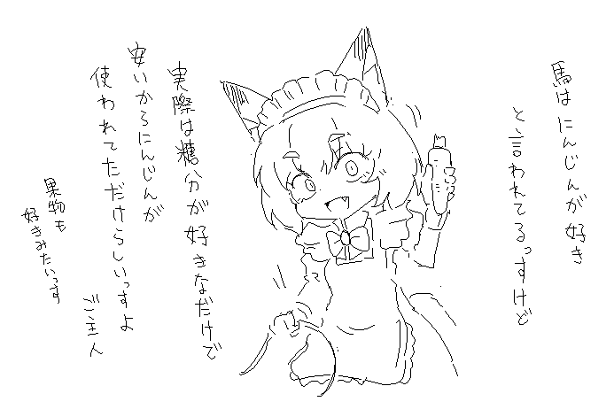
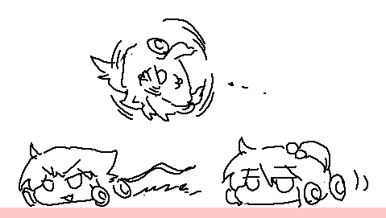
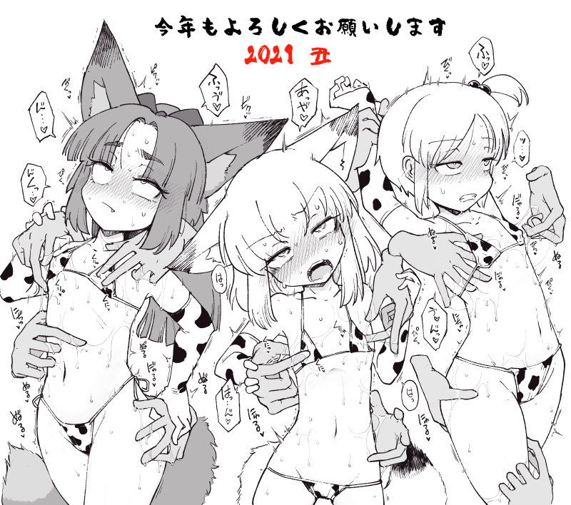

本人証明時：◆a6e.xnOu1E
【注意/caution】
ゲームに関して、紹介・配信は行っていただいて問題ありませんが、アプリケーションそのものの転載は禁じます。
データの改変は個人で楽しむのは問題ありませんが、配布等を行う場合はご連絡ください。
年齢制限および猟奇表現のあるゲームですので、配信等を行う場合、配信サイトのルールにご注意ください。
その他ご不明な点があれば、ご連絡ください。
問い合わせフォーム
メッセージはこちら
ツイッターで返信する版も追加しました。
こちらは拍手よりも返信が早いので、用途に応じてご利用ください。
2022/03/04 拍手返信
C100はたぶんオオカミメイドさん本
最近、なんかそれっぽいアクションシーンみたいなのを作るのが楽しいです
| ||||||


{kind=link}
{kind=link}
{kind=link}
-----2022/03/04---- 時間が経つのが早すぎる コミケC100は出るとして、 ウマのイベントもなにか出たい DDも進めたいと来たところで りょなけがさらっと通常営業し始めたので完全にこの時点でパンク気味なのですが、 とりあえずちょっと今どう転がるかわかんないんですが、 そこに加えてハチャメチャな忙しさが1段上がる可能性があって、 もしそれを引いてしまった場合、もしかしたらりょなけでは本は出せないかもしれんレベル やることがあるのは悪いことではないけど、 本当計画的にやっていかないと忙殺されるなあという気持ちです
第75問 昨年大晦日に隣の家の人が食べたそばの本数を答えなさい >> 03/03 11:45 ~ >> 03/02 17:43 ... ...! >> 02/21 20:39 ウマシコしようが無断転載サイト張ろうがなにもされへんのやぞ QUEUEに今さら何を望む 所詮何もやらないし、何もやれないさ 実はなんかやってたりします >> 02/20 21:20 ｳﾎﾎ ﾎﾎﾎ >> 02/18 20:58 最近「大家族のお姉ちゃんは弟達の性処理で大忙し！」みたいな エロ漫画の広告良く見るんだけどお姉ちゃんが涼子さんに似てて滅茶苦茶股間に響く 弟たちかぁ >> 02/17 12:38 元の場所や姿に戻りたくても戻れないシチュって結構良くないですか？ 新ポケモンの女主人公ちゃん然り黒飴マン然り 黒飴マンは初めて見た 不可逆なステート遷移自体は何かしらのお話を生むよね >> 02/17 19:54 ヘイト稼ぐのが商売だからな 反応してるお前は思うつぼ あとちなみにたぶんこれとかはチャットの内容をそのまま送ってる系だと思うけど、 次からはめんどいのでレスはスルーする形になるかなと思います >> 02/16 10:15 基本無料ゲーに一定数いる、「課金してない俺偉い。課金するやつはザコ」みたいな思想。思想は自由だ！ まぁ思うぶんには自由 あとはそれを人に押し付けなければ >> 02/16 13:01 お昼名物チンパンバトル チンパンジーの握力でバトルしよう >> 02/16 19:53 粘着に粘着してる人キレはじめたかな まあ自分の腰が重すぎたのはある >> 02/15 18:19 発電所変なのしか残ってないよな… 人は入れ替わるもの >> 02/15 18:27 ステーキハウスめんとsakifoxの関連性とは？ どうやらどちらも絵を描くようです >> 02/12 17:01 ひろゆきへの嫉妬心が醜いなぁｗ あの人いつの間にか鋭いことをいう論客みたいな扱いになってて面白い >> 02/12 22:38 創作職を追い出して荒らしが居座るって最低だよな 追い出すと言うか、匿名コミュニティにおいて作品がある程度知名度を得てくると、 居続ける事自体が場に合わなくなりがちという側面自体はあるのかなとは思います >> 02/12 22:52 サキ氏の粘着はけっこう昔にもいたけどまだおるんか こえーよ １０年以上いることになるぞ まあ同一ではないとは思いますが そういう界隈はわりと10年単位で追いかけたりすること自体はザラにあるきはします >> 02/10 10:49 長い事さきつねさんのサイト経由せずお気に入りに入れたリンクでくえうえ来てたから今気づいたんだけどけしかけモンスター無くなっちゃってるやん ちょっとキャパオーバーしてしまったので、新規受付停止しちゃいました やる実現性がない状態で受付し続けるのは誠意に欠けるので >> 02/08 12:31 久しぶりの納豆ごはん 最近納豆食べてないなあ >> 02/08 14:37 そりゃ名前どころかIDすらないチャットルームだもの荒れるのは仕方ない 前々からよく言うけど、名前とIdがあるのに毎日怒りコンテンツにあふれているコミュニティもあるんで、 それが無いことそのものが理由でもないんだろうなと思ったりします >> 02/08 22:16 荒れてないと静かな発電所 メインコンテンツが荒らし 明確にやかましいことをしている人には対応を入れました >> 02/07 20:35 カクヨム職員が宣伝なんかしなきゃこんな荒れることもなかったのに あそこで話す内容自体はできるだけなにか制限を加えたくはないので（明確な悪意があるのはもう流石に対応入れたけど） 自作の作品の宣伝そのものは止める理由そのものは無いかなとは思っています ただ、匿名の場において作品というのは、人物を特定する、ある種コテハンのような性質があるので いわば2ch（今は5chか）にコテハンで書き込むときと同等のリスクと、立ち回りのうまさが求められるとは思います この辺りはもはやルールでどうにかというよりは、人類がもっとインターネットがうまくなるしか無い >> 02/06 18:56 ずはちゃんの倒したらまず死体を燃やすという 今までなら真っ先にそうしてきたはずのことを今までで一番強い相手に怠ったツケは大きすぎた ちょっと余裕がなさすぎたのかもしれません 油断 >> 02/05 14:19 CrackleCradle >> 02/05 14:27 CrackleCradle CCCC >> 02/04 08:52 チョコ味のカロリーメイトを食べてお菓子食べたい欲を満たす実験 普通にチョコ系のお菓子食うほうが上手い気がする >> 02/03 08:45 最近米をたくさんくってるうおお 太らぬ程度で >> 02/03 12:26 わかめごはん ほどほどの塩気がうまい >> 02/03 12:39 けしかけモンスターを眺めてて気になった物を勝手に描いても許されますか？ 正直自分だけだと手がまわりきってないので、いいような気もするという気持ちと、 投稿してくれた人はあくまで自分が描く可能性に対して 投稿してくれたのかもしれないしなという気持ちがある のでちょっと良いと言い切ることはしづらい いざやってみたら思った以上に話作るのが難しくて挫折してしまったという感じなので投稿してくれた人には申し訳ないなぁと思います インターネット上に投稿されたけど結局形にされていないものをインスピレーションの参考にした みたいなていでやるぶんには、止められる理由はない気がするので、なんというかそういう感じで上手い塩梅で >> 01/31 22:31 さきつねさん おたんじょうび おめでとう ありがとう >> 01/30 00:04 ddproject催更！www なんか予定を立てても予定以上に忙しくなりがち・・ >> 01/30 12:39 職員の～っていいよねって書き込みはぼくの意見に同調しろ～！だからマジで聞く価値がない まぁ状況によるとは思う >> 01/30 21:22 入院中暇だから、エロコラをスマホで作りまくってるんだけど… 天崎姉妹の素材が少なすぎる。特に涼子さん。 天崎姉妹のえっち、もっと供給してくれたら嬉しい(´・ω・`) なんか彼女らはゲームで動かしたいという気持ちがあるんですよね >> 01/28 16:02 操你妈 >> 01/28 16:03 我没有骚扰人呢 >> 01/28 16:06 呃呃呃 なるほど >> 01/27 17:00 入院中で、めちゃんこムラムラしてるわ… そろそろ涼子ちゃんのガチエロが欲しい。そろそろ退院できるから…(笑) すでに退院してそうな気もしますがお大事に >> 01/24 09:41 本人は面白いと思ってるシリーズ そういうの自分がやらかしてないかよく不安になりますね >> 01/21 22:33 ここ二週間パンばっかり食ってて精神的にキツかったから今日は米を食ったら元気が出てきた 米は偉大 意外と「今日は米を食おう」と決断するに至れた事自体が元気が出てきていた表れなのかもしれない >> 01/21 22:37 気持ち悪い時は「あー気持ち悪いなー」って思うと気持ち悪いけど、 気持ち悪いと思わなければ気持ち悪いのを忘れたりするから気持ち悪いのって気の持ち様だったりするよね(重篤な場合は知らん) 吐き気とかそういうアレかな 忘れてたら忘れてたでいきなり嘔吐しそうになったりするので気の持ちようには案外従っておいたほうが良いこともありますね >> 01/20 16:35 コピペなんて荒らし扱いせず脳内で無視するようにすればいい システムに頼る方が悪い まぁ脳内で無視するのもMP使うんで補助としてミュート使ってもらえれば >> 01/18 23:57 すし めし >> 01/16 00:00 俺は、性癖の化身…なのか…？ より高みを目指そう >> 01/14 00:32 人生で消費したティッシュの枚数に応じて罪が重くなる地獄があったら俺にはやべぇ地獄になるぜ 花粉症の人が死にそう >> 01/13 12:13 朝起きたら隣ですやぴすやぴしててくれ 7時に起こしてください >> 01/13 23:54 思い付いたことをスマホのキャリアメールにメモしてるんだけど、 しばらくいじってないメモの最終更新日が2018年とかになってて「え？そんなに経ってるの？」ってなってマジそんなに経ってるの？ まぁちょっと気を抜いたらすぐ2ヶ月放置しちゃうような私とかもいますし >> 01/11 00:40 懲役30日を終えた後の天崎姉妹の老いっぷりを見てみたい 彼女らそういう精神系の耐性はどうなんでしょうね >> 01/10 21:18 本当に一人アク禁にしたら平和になるのになぁ やっぱ難しいじゃろうな ぶっちゃけIPとかもコロコロ変えてくるので 遮断してハイおしまいとは行かないのが実情 >> 01/10 21:37 隣のお姉さんリョナのログ サキ [Home Page] 2009/1/22 (Thurs.) 08:40:31 余裕ぶっこいてるとぶちころころされるって学校で習わなかったんですか＞＜；；； 随分と懐かしいものを オリボコ板、勢いで立ち上げたけど時間とともに発散してしまってどうにもならんくなったけど、 正直そういう企画の立ち上げ方を未だに繰り返している気がして、人間成長しないものだなとも思う >> 01/09 21:08 俺は弁当を食べる者 からあげ弁当だ 畏れよからあげを からあげはいいものだ >> 01/08 17:30 所長「「チッ、ふたなりと男の娘の区別もできねぇのか！」 思い通りに操れねぇ >> 01/07 14:16 1 >> 01/07 14:17 2 ｻｧﾝ >> 01/07 21:10 sakiさんはパズルゲームはやったりしますか? 私はパズルゲームではパネルでポンが一番好き 個人的には最強のパズルゲームだと思う 頭がわるいのでやり込めるほどのプレイができない 敷いて言えばマインスイーパーとかはすき >> 01/06 01:48 奈々ちゃん男の子説 おむねの増量が待たれる >> 01/06 08:18 when 5w1h >> 01/03 01:21 バトル漫画とかによくある、キャラクターが死ぬ直前に高みに至って超強くなる的なシーンめちゃくちゃすき いいよね >> 01/03 12:58 awa hime -----2022/01/02---- あけてしまいました コミケも一応無事終了しました、ご来場いただいた方ありがとうございます お互い健康に気をつけていきましょう 今年はゲームづくりをなんとかしていきたいですね 参加したいイベントもありますが、うまく両立したいです
ニュイーヤーはちかい >> 01/01 04:04 こむぎこを使ってる系のスイーツは牛乳と一緒に食うとうまい たい焼きとか牛乳と一緒に食うとうまい 俺は牛乳消費マシーン あんこと牛乳もよく合うと思う >> 01/01 04:10 性癖が広がる兆しを感じる 鬼滅とあつ森のせい 開拓が進むのはいいことです >> 01/01 16:23 最近よくある露出多めの服よりも、もふもふに着込んでるほうが可愛いしえろいと思うの もこもこになってるのいいよね >> 12/31 15:19 年越しカップ麺 実際おいしい >> 12/27 03:06 あつ森やってて、主人公に女装させてるときに他の住人が遊びに来たんだけどさ あわてて化粧落として服着替えて、仄かに残ったチークと少し乱れた服装で応対をする主人公くんのファパビリティ限界突破 二重の意味でプレイが捗る >> 12/27 12:14 落書きガイジは6時〜8時半と12時〜13時と18時〜23時くらいによく出没する さようか -----2021/12/27---- 更新サボりたおしました 過去イチで急スケジュールで本を描きましたがなんとか間に合いました でもおかげで他のこと何もできなかったので、次はもうちょっと余裕持ちたいですね
夏はすぎさった なおQUEUEのログだけ送ってきている方に付いては返事はオミットしてますがあしからず >> 12/26 20:48 今日は特にさむぃ カンパが来ている模様 >> 12/26 14:22 今年のDD更新は犬追加くらいかな？ちょっと寂しいかも。来年ペースアップ応援しております。 ちょっと自分でも思ったより手が進まなかったですね、挽回したい >> 12/18 00:40 寒いとトイレが近い 温かいコーヒーでも飲もう（利尿） >> 12/17 17:57 寄生型淫蟲に生まれ変わって奈々ちゃんに寄生したい 内部からの防御不可の快楽に焼けたドラム缶の上のミミズの如くのたうち回る奈々ちゃんを涼子さんに見せて心配させたい かわいいシチュエーション >> 12/10 12:41 2022年もサキたそ一筋、精進します 色んなものをインプットしていこう >> 12/08 12:38 しっかしあれやなぁ 奈々ちゃんのおまんこはきっと苺の香りがするなぁ確信持てるなぁ 夢を持つのは良いことだと思います >> 12/04 20:10 人生で一番と言っていいほどエグい描写で大好きだったヒロピン系小説書きさんのサイトが、ついに消滅してしまっていた…… 割と悲しい。 個人サイトを保たずとも発表の場がある時代ですしねぇ >> 12/03 21:45 電車の中に地獄ができあがっている なんか最近物騒ですわね >> 11/29 10:17 ぽよ？ ぺよ >> 11/28 01:50 久々にこっち見に来たらweb拍手のアイコンがメイドに乗っ取られていた件 一方その頃さきつねさんはめしを食っていた() 実は最初の猫ボタンはWeb拍手のプリセットだった >> 11/26 19:28 Sakiさんの作るゲームが大好きなんじゃ ゲームのほうの更新が遅くて申し訳ない >> 11/22 00:22 [2021/11/22 00:13] 黙れ 殺すぞ[2021/11/22 00:14] もっかい死ね [2021/11/22 00:19] そのまま死ね 暴言放置はまずいです 期間によりますかねぇ 機械的にそのへんの言葉を弾いてもいいんですが、たぶんそれで収まるかというとという >> 11/21 01:03 clap clap clap >> 11/20 09:00 誤変換から普段どんな文章を書いているかを測るメンタリズム そして絶頂パスタが出来上がる >> 11/19 16:00 体力をつけるための運動をするための体力をつけるための運動をするという謎の現象 ありがち >> 11/17 11:02 とんかつ地獄 良さそうと思いつつ意外と実際にやるとしんどそうな地獄 >> 11/17 11:29 デニム デニム渡り >> 11/14 02:00 発電所最近荒らしがよく湧いてますね 匿名チャットなので放任するのが適切というか仕方ないところもありますが、 「どうせあの人は何も対応しないから好き勝手やるよ」って荒らしが言ってるの見てぐぬぬってなりましたね まぁ強権をぶん回しても良いんですけどね >> 11/14 18:02 ごはん たべたい >> 11/13 01:26 さきつねさんが流血描写描くときの血の表現のコツとかありますか？(例えば傷口に刺さってるもの抜いたときとかその傷口から出る血とか) 割とブラシだよりではありますが、吹き出させたいときは思い切って吹き出させます >> 11/13 19:39 涼子さんに顔面騎乗されてー！ そのまま振り下ろされるナイフ >> 11/11 20:08 sssssssssssssssssssssssssss >> 11/11 20:08 as >> 11/11 20:08 losj (*'ω'*) >> 11/09 00:27 ずはちゃん本もずはサキュも何が恐ろしいって初期のナーフかかってない場合両方ずはちゃんがしっかり勝ってしっかり帰還できてるって点 まぁサキュバスさんが最初から本気だったらどのみちどうなることやら >> 11/08 00:47 最高 >> 11/08 00:47 いいね！ イェイ >> 11/07 03:25 ずはさん本即日完売おめです 泣いてないよ 好評のようでありがたい限り >> 11/06 04:48 サキュバス完全に倒すには本気で核が必要なことを理解したけど ずはちゃんあそこまで食い下がるとは思わなかった サキュバスにしてみたらあそこまで追い詰められて約束守る義理も義務もない まぁ一応ずはちゃんの敷いたルール内ではあります >> 11/06 13:14 最近米食ってねぇうぉぉぉ 米ばかり食べて太りました >> 11/06 19:51 ひげを剃るのをサボるとひりひりする そってもヒリヒリしそう >> 11/06 21:35 巴子さん本の肋骨へし折る奴って刃牙の愚地独歩が元ネタですか？ というよりは教えてもらったことベースです >> 11/05 20:25 ずはちゃん本読みました ラストに出てきて生物の三大定義に該当している以上は明確なルール違反 ルール守れなかったサキュバスの負けと考えるべきか 最後まで立っていられなかったずはちゃんの負けというべきか 深く考えなければサキュバスがガチギレしてルールぶち破っただけ 久々のずはちゃんめちゃめちゃハラハラしました！ やはりサキさんの漫画面白い……！ 願うならそろそろずはちゃんには物言いなしなレベルで完全な形で勝って欲しかったけどサキュバス相手によくやれた。 反則同士のばとる >> 11/04 16:33 トイレが爆発する刑 意外と切実 >> 11/04 16:36 サラダチキン おいしいよね >> 11/01 03:09 あつ森で主人公に女装させることで俺の女装したい欲を満たす 結構満足する めたばーす >> 11/01 21:21 おそようございます。 ごはんください。 前回更新のとき食べたでしょ >> 10/31 14:12 新刊めちゃくちゃ良かったです！戦闘もエッチなのもめちゃくちゃめちゃくちゃ良かったです！ 最後までどっちが勝つか分からなくてワクワクしました！演出もめちゃくちゃかっこ良かったです！ありがとうございました！ シーンのバランスに悩みながら描いたのでそう言っていただけるとありがたい・・ >> 10/31 20:58 Happy Halloween. 保護の黒猫がスコティッシュの彼氏をゲットした件。 順調に育っているようで何より >> 10/28 08:47 このサイトはGoogleの提供でお送りしております。 協賛 >> 10/28 11:22 少し前の俺の方が絵が上手い現象が起きる理由がわかった 少し前の俺は楽しんで描いてた 勢いがあるときはやっぱり出来も良くなるよね >> 10/28 12:45 ベイマックスが好き よさベイも好き 俺は得してる 何事も楽しんでいく >> 10/28 15:06 オリキャラ作るのにいろんなイケメンやいろんなかわいい女の子を描いたらいろんなイケメンやいろんなかわいい女の子を描けるようになった でも俺はイケメンじゃない そしてかわいい女の子でもない もはや僕は人間じゃない(直太郎) イケメン女の子にでもしておこう >> 10/26 10:03 今日は火曜日ですが、昨日は月曜日。 明日は水曜日が来て、そして明後日には木曜日が訪れる。 そんな世の中をあなたはどう思いますか？金曜日 土曜日になればまた代わるかも知れません >> 10/26 13:48 どんな物事も「エッチだぁ！」って言って楽しめる大人になりたい えっちは人の営み 人以外も営んでるけど >> 10/25 17:40 今日は月曜日だけど明日は火曜日 その次の日は水曜日の可能性が高いです >> 10/24 10:10 マンハッタンカフェ育成でプランBが上手くいったアグネスタキオンが やったねえ！良かった良かった！→よかっ…た…？→ →違う！満足しているはずだ！！それでいい筈だ！満足しろ！！→ →いや私の肉体では出来ないというのか！！！私ではないのか！！！→慟哭 ってなってる流れがすごく刺さった 突然のネタバレ >> 10/24 11:36 あむあむ まむまむ >> 10/23 22:03 作者大大，《DDproject》中的狗狗有一个bug，即使狗狗已经打完了血，它也还能攻击。希望大大可以在后面的更新中改正这个bug。（另外，大大辛苦了。如果有什么要事的话改bug可以先放一边。天气转凉了，大大记得注意身体。） 作者は大きく、「DDproject」の犬にはバグがあり、血がなくなっても攻撃することができます。 このバグが後のアップデートで修正されることを願っています。 （また、大変な作業です。何か重要なことがあれば、まずバグを脇に置いておくことができます。天候が冷え込んでいるので、体に注意を払うことを忘れないでください。） ご連絡ありがとうございます！ >> 10/22 12:23 おらっ昆布だっはやくしろっ 出汁でちゃうぅ >> 10/21 02:45 我々が知る秋という概念は消えてしまった... 夏！冬！ >> 10/20 16:31 脳が停止するぅぅぅ うごかして >> 10/20 16:34 基本インドアだけどたまに無性にドライブしたくなる とはいえ車は走る個室だからインドアで間違ってはいないのか どう思う？ 屋外は屋内を屋外と仮定すれば宇宙全体を含む巨大なインドア >> 10/20 17:12 最近タイピングが早くなったから、 サキさんのなんかタイピングするゲームやったらダメダメでした。 どういうこと？ AtoZはタイピングとはまた別ジャンルなので >> 10/19 13:43 お菓子は食後のデザートみたいに食うと満足感がすごい ご飯はご飯でちゃんと食べないといけないしね >> 10/18 21:04 DDproject 快点更新呀❤！爱你！ がんばります～～ >> 10/17 10:06 「さまよえる転生者達のリライフゲーム」て漫画、いい感じのR-18G系と思いますがどない?() よかったです ただ惜しむらくは、死のインパクトは初回以降なくなっちゃったのが残念ですね >> 10/17 15:30 俺にはじゃんけんで勝てない才能があるのかもしれない 運を超越せしもの >> 10/17 15:36 >> >> 08/12 23:17 >> >> 06/30 13:43 う～☆ >> >> ぱ～ >> る～☆ >> ぱ～～ ( ◜◡◝ )ｱﾘｶﾞﾄｳ…(成仏) いってしまった >> 10/13 14:30 ゲームしてる？ あんまりしてる余裕が最近無いかも～ >> 10/11 09:06 にゃんこメイドがかなりツボにはいったのですが今後ふえることはありますか？ メイドが増えるという意味なのか、猫メイドが増える意味なのかによりますが 一応猫メイドさんは今後も描きます >> 10/07 02:05 最近歳なのかエロ絵で致そうとしても２〜３回線で満足・限界が来てしまう それにひきかえ絵の探索意欲はあまり衰えず毎回１０枚超は調べてしまう 抜こうと思ってたのにまだ抜いてない絵ばかりがどんどん溜まってつらい 十分元気ではあると思う >> 10/07 04:49 KAWAIIIIIIIIIIIIIIIIIIIIIIIIIIIIIIIIIIII IIIIIIIIIIIIIIIIIIIIIIIIIIIIIIIIIIIIIIIIIIIIIIIIIIIII!!!!!!!!!!!!!!!!!!!!!!!!!!!!!!! !!!!!!!!!!!!!!!!!!!!!!!!!!!!!!!!!!!!!!!!!!!!!!!!!!!!!!!!IIIIIIIIIIIIIIIIIIIIIIIIIII IIIIIIIIIIIIIIIIIIIIIIIIIIIIIIIIIIIIIIIIIIIIIIIIIII!!!!!!!!!!!!!!!!!!!!!!!!!!!!!!!! !!!!!!!!!!!!!!!!!!!!!!!!!!!!!!!!!!!!!!!!!!!!!!!!!!!!!! うむ >> 10/06 02:26 自分のプライベートなパーツをピラニアのベイトにするという謎の死に方 奇特な人もいるものだ >> 10/02 20:12 チョコをくいまくる 私も食べたい >> 09/29 01:04 最近ホームページ閉じてブログにブログを閉じてTwitterにとなる例をちょくちょく見ますが、なるほどちゃんと更新して運営していた(ある程度以上出入りがある)所は皆このような事に対応が必要だったのですね…… このコメントが読まれる頃にはまた一段と冷え込んでくるか、はたまた過ごしやすい気候になっているか。 御身大切に とても寒くなりました >> 09/29 02:36 先日ワクチン接種のために地元に帰省しました。 注射はそこまで痛くなかったですが、接種前のPCR検査で親指の長さくらい鼻の奥に綿棒を突っ込まれました。 ぶっちゃけこっちの方が痛かったです。 注射全然痛くないよねあれ >> 09/29 19:08 チョコは牛乳と一緒にくうとうまい 冷たい牛乳だと固まる問題はある >> 09/28 23:55 子猫拾った人ですが、今朝とんでもない夢を見たんよ。 ポプテピピック風の顔したドラえもんの手足胴が長くなって、子猫にお乳あげてる夢なんだが・・・ 猫型ロボットの面目躍如 >> 09/27 00:25 更新乙なのじゃ 最近少なくてごめんね >> 09/27 00:27 大好きなエロ漫画家さんが最近やってたシリーズが単行本化したので喜々として買って読み勧めていたのだけれど まさかの『後半へ続く』エンドになってててっきり一冊で完結したもんだと思ってたので『ヤベェすげぇ』って割とテンションを上げている 描きたいものがいろんな都合で描ききれなかったとき、続き物にしたくなりたくなりますね～ >> 09/27 00:33 エロ漫画をエロマンコってミス入力しちゃったんだけどよく考えるとそんなに間違ってもいないなって一人で地味にウケていた（謎の報告） 局部以外もエロいので判定が難しいですね >> 09/26 10:55 再見ﾝｫｩ!!!!(カッコいいポーズ) おひさしぶりです >> 09/26 13:03 sakiさんちの冷蔵庫に[さきつね][オグリ]って書いてある紙を貼る 冷凍庫にも貼る 食べたいものには名前を書いておきなさい >> 09/26 14:28 ふと思いついたんですがDDに熱々の鉄板に焼かれるシチュなんてどうでしょう 火炎放射や酸に焼かれるのとはまた違ったリョナ味があると思うんです 良いですね、その上を多少歩くのは大丈夫だけど倒れたら死ぬというのも面白そう >> 09/25 20:07 9月3日に車道の真ん中で生後4週（推定）のベンガルっぽい黒にゃんこ（おにゃのこ）拾った。 キツネさんみたいな美人に育てます。 健やかに育ちますよう -----2021/09/25---- 時が早い りょなけの原稿は進んでますが、相変わらず状況は読めませんね～ 一応今のところは出るつもりでは進めています
もう夏が来ちゃいました >> 09/25 01:16 あおばのもーりでかけまわｷﾞｭｳｰ 牛～ >> 09/25 01:16 かかとはずませこのゆびとまﾍﾟ 途中で喰われたようだ >> 09/23 00:23 [2021/09/23 00:22] んで、狂信者だとレッテルを貼り付ける根拠は？ [2021/09/23 00:22] コピペおじさんと逆張りおじさんが興奮し始めたな [2021/09/23 00:22] んで、狂信者だとレッテルを貼り付ける根拠は？ （中略） [2021/09/23 00:22] イボンコペッタンコ！ [2021/09/23 00:22] んで、狂信者だとレッテルを貼り 同文章での連投はちょっと対策入れますかね 改修版だと対応入れてるんですがあっちも置きっぱになっちゃってるのでちょっと現状版に一部移植します >> 09/23 23:55 カップ麺が増えていく現象 普段カップ麺あんまり食わないのに 増えたはずのカップ麺がいつの間にか無くなっている現象 >> 09/21 22:40 [2021/09/21 22:39] 「関係ないことはどうでもいい」とかカッコつけてる職員、一時間前とかは関係ないフェミやヴィーガンあたりにキレてそう [2021/09/21 22:39] 反論できない [2021/09/21 22:39] 俺のPCにはやましいことしかない 性癖的な意味で [2021/09/21 22:39] 「関係ないことはどうでもいい」とかカッコつけてる職員、一時間前とかは関係ないフェミやヴィーガンあたりにキレてそう （中略） [2021/09/21 22:38] 「関係ないことはどうでもいい」とかカッコつけてる職員、一時間前とかは関係ないフェミやヴィーガンあたりにキレてそう [2021/09/21 22:38] 「関係ないことはどうでもいい」とかカッコつけてる職員、一時間前とかは関係ないフ >> 09/17 23:12 [2021/09/17 23:09] 殺すぞ >> 09/15 16:58 [2021/09/15 16:55] 硫酸とガソリンと四肢欠損のどれがいいか選べよ [2021/09/15 16:55] 硫酸とガソリンと四肢欠損のどれがいいか選べよ [2021/09/15 16:55] 詠むまでイくんじゃない [2021/09/15 16:55] 硫酸とガソリンと四肢欠損のどれがいいか選べよ [2021/09/15 16:55] 硫酸とガソリンと四肢欠損のどれがいいか選べよ （中略） [2021/09/15 16:54] 硫酸とガソリンと四肢欠損のどれがいいか選べよ [2021/09/15 16:54] 職員の辞世の句ならちょっと興味あるかも… >> 09/14 19:39 [2021/09/14 19:39] この発電所は壊れる燃料ちゃんに興味を示さずに雑談を続けることがメインになっている職員の存在によって完成する 言わば究極の尊厳破壊システムなのだ [2021/09/14 19:39] この発電所は壊れる燃料ちゃんに興味を示さずに雑談を続けることがメインになっている職員の存在によって完成する 言わば究極の尊厳破壊システムなのだ （中略） [2021/09/14 19:39] この発電所は壊れる燃料ちゃんに興味を示さずに雑談を続けることがメインになっている職員の存在によって完成する 言わば究極の尊厳破壊システムなのだ [2021/09/14 19:39] 今なら再掲してもすぐにながれる! [2021/09/14 19:39] この発電所は壊れる燃料ちゃんに興味を示さずに雑談を続け 長い >> 09/13 00:16 寒くなってきて喜んでたら最近暑い だましたな キセツノカワリメ >> 09/13 00:18 誰にも見せない漫画を描き続けるの楽しい 自分はみせたくなっちゃう >> 09/13 00:27 自分をわざと精神的に追い込む時の幸福感半端ない 一歩間違えればツイッターで構ってちゃんになるやつ 依存性があるやつなので気をつけよう >> 09/13 12:31 のびたラーメンはけっこううまい アレはアレでスープとの親和性は高い感じはある >> 09/13 19:19 か弱い幼女だと思っていたサキさんが屈強なヴァルキリーだったとは驚きだ 言うても最近は何もしてないので普通です >> 09/11 23:07 そもそもウマ娘の話題以外禁止ってルール破ってる時点でV豚は犯罪者なんだよ 特にルールはない >> 09/10 12:49 こうやって職員は機会損失していくんだね…分かったかガイジ？ わからん >> 09/08 09:22 前にずはちゃんが出産する小説が渋に上がってましたけどさきつねさんは出産に興味あります？(触手とかじゃなくてちゃんとした人間の赤ちゃん産む奴) やっぱり犠牲になるなら覚悟がある子がいいので 人型だと生んだ子が可愛そうになっちゃいますね なので触手を孕んだりするのは全然ありです >> 09/05 06:24 この発電所は壊れる燃料ちゃんに興味を示さずに雑談を続けることがメインになっている職員の存在によって完成する 言わば究極の尊厳破壊システムなのだ それはまぁそう >> 09/02 12:50 ご満足頂けない…？ ご満足したい >> 08/31 02:46 グススシセスス スシ >> 08/30 00:37 俺は理想が高すぎて死ぬ ありがち 自分もクオリティ病にかかって進捗が少なくなる >> 08/28 03:45 sakifoxさんが描かれている漫画等におけるサキュバスさんは、 宗教の教義や民間伝承における「悪魔としてのサキュバス」とどれくらい関連性を持ちますか？ 質問者自身、悪魔としてのサキュバスには全く詳しくないのですが、 つまり質問の意図としましては、例えばsakifoxさんの漫画におけるサキュバスさんは、 力がべらぼうに強かったり、特殊な能力を持っていたりするわけですが、映画に出てくる悪魔みたいに、意味深に登場するだけで街灯を全部割ったり、周囲が何故か圏外になったり（前述の特殊な能力とは異なり、何というか、悪魔の所作みたいな）、あるいは、漫画では魔法少女の方たちが恐らく物理的な？攻撃を加えて倒そうとすると思うのですが、サキュバスさんに聖水や祈祷の儀式（イメージです）のような、 悪魔祓いのやり方が有効だったりするんでしょうか。 魔法少女の方たちが触手やサキュバスさんと戦っている世界（恐らく現代）で、 悪魔祓いの概念がどれくらいフィクション（フィクション内フィクション）以外で見られるかどうか、というのもありますが……。 決まってない、敢えて決めないでいる、という場合は畳んでください、胸に。 ちゃんと伝わっているかどうか怪しい文章、及び内容ですみません。貴方のファンです。新作漫画楽しみにしています。ﾜｵｰﾝ まぁキリスト教的な悪魔というよりはそれに似た形質の生き物という感じですが、 魔力がイメージや願望のパワーもあるので、人間のイメージによって悪魔の性質も持っていると思います～ >> 08/28 09:17 SAKIさんのキャラの二次創作でNTR物を描くのはOKですか？ いいですよ～ >> 08/27 20:22 私は中国からのファンです。DDprojectが好きです。 必ず更新のスピードを上げてください。お願いします どこまでやれるかわかりませんががんばります～ >> 08/27 20:56 奈々さんはヤリきられるか殺りきるかのシュチュも似合いそう 残弾の限り頑張ってくれそう >> 08/27 21:25 やっぱ夏はカレーだよなー！ かーちゃん水お代わりくれー！ ば、おいやめろ！TSには興味ないんだって！TSがなんの略かも知らないんだって！ TOTEMO SPICY >> 08/26 19:56 発電所で小説宣伝してるカスのことBANしてもらえねえかな 発電所にも所長にも関係ない一次創作とかいらんのよ わかる？ まぁ度合いによる >> 08/24 00:56 j k >> 08/24 21:56 ？？？ ！！！ >> 08/23 02:20 誰か……誰か……サキュバス倒してくれ…… （きつねみこ以外。あれは別ベクトルで真似できないから意味がない） 舐めプをつけばあるいは >> 08/22 07:45 真綿で締めるようにで出てきた あざみさんをジラジラ焦らしてた触手くん大好きなので 再登場待って待っス！！！おねげーしますだ！！ ああいう細いので焦らすの好きなんですよね、たぶん描きます >> 08/17 13:10 YouTubeとかで配信始めないの？ 声をあまり出すのもなぁという >> 08/15 09:44 まじめだね しかし飽きっぽい >> 08/12 19:12 更新乙です乙です そしてまた間が空いちゃう >> 08/12 19:18 どちらかというとイラスト専的な リョナ絵師さんエロ絵師さんの創作推移の傾向として、 こうシチュエーション作りがエエ感じの人が段々と文字方面に手を伸ばすパターンがあるなぁと思ってるんですが、 最近はそこから更にゲーム系に創作が発展していく例が いくつか観測されてきて（エロ戦闘ＲＰＧやノベルゲーとか）、 これはとても良い流れだと思いながら緩く注視してる ゲームづくりの敷居が下がって手を出す人も増えましたね～ プログラムの知識が必要だったのも今は昔 >> 08/12 21:33 88888888 ぺちぺちぺち >> 08/12 23:17 >> >> 06/30 13:43 う～☆ >> ぱ～ る～☆ ぱ～～ >> 08/12 23:34 趣味をやることが精神的に辛い時期に突入しました たまにある 別の趣味とかやってやり過ごそう >> 08/11 10:58 ccにあったようなダメによる服破れや、 気力ゲージによってゲームオーバーになるシステムは、DDにも入れますか？ あるなら、服破れ且つ気力なし・体力なしで、這いつくばって逃げているところを 犬に後ろ（股間）から匂い嗅がれて、犯される…とかないですかね？ 犬は臭いで興奮するらしいので、食欲よりも性欲が刺激されたら、 薄い本のバイオハザードにならんかなぁ、と…。 犯されるかどうかはさておき、服破れみたいなのは入れるつもりですね～ >> 08/10 14:16 あつい.... あつなくなってきてしまった >> 08/10 15:32 作者大大，新的DD有一个BUG不知道你发现了没有， 新出的狗即使是没有血量也可以攻击。 但是能把狗给更新出来，大大辛苦了！ 報告ありがとうございます～ >> 08/10 23:34 3次ショタの可愛さを知ってしまった なんだあのツヤツヤの肌と髪は 言動によるけど基本的には可愛いものですね >> 08/09 21:39 外でアラームがピュイピュイいってる 防犯ブザーかもしれない >> 08/09 21:39 けもすき かわいい すき かわいい >> 08/09 23:41 結局、開会式、閉会式含め、 一秒もオリンピック見なかった(反対はしていたが、見ないぞ！！と心に誓う程でもなく単に興味が無かった) まぁオリンピックに限らず興味が薄いイベントとはそういうもの -----2021/08/09---- お久しぶりです りょなけはちょっとどうなるかわかんなくなってきましたね 開催はされるようですが、もしかしたら欠席かもしれません さしあたって本は作るスケジュールですすめると思います そしてDDの方は、ほんのちょっとだけ更新です わざわざDLするほどでも無いかなくらいの追加ですが、 お犬さんのゲームオーバー演出を追加しました 次は流石に何か見た目に変化のある更新がしたいですね あと、拍手だと質問とか回答するのがだいぶ遅くなっちゃうので、 ツイッターで返信する版も追加しました。 こちらは拍手よりも返信が早いので、用途に応じてご利用ください。 ごめんて >> 08/09 18:43 狼メイドさんをマジ泣きするまでくすぐりたい 大笑いする彼女はどんな顔になるのか見てみたいですね～ >> 08/08 01:24 ヒロアカの発目ちゃんとか好きそうだなって思った、思っただけ 結構好きですねー >> 08/08 07:03 久しぶりにQUEUEをのぞいたらその荒れ方に驚きました。 影響など大丈夫でしょうか。お節介かもしれませんが、IDの導入や個人BANを検討してはいかがでしょう。ご意見失礼しました。 影響はまぁ特にはない感じですね >> 08/08 23:19 今でも熱いと思うのがフリーのツクール製RPGで 難易度も高めで熱い戦いが楽しめ、クリアすると達成感があり やり込み要素もあって面白い かわいいキャラも多く、全滅したりするとこの子達は敵に打ちのめされて・・・ と思うとなかなか胸が熱くなる。全滅の回数が記録されたりする作品だともっとそう思える ああいうカウントは良いですね >> 08/07 12:43 papapapapapapapapapapapapapapapapa >> 08/07 12:44 nnnnnnnnnnnnnnnnnnnnnnnnn >> 08/07 12:44 nnnnnnnnnnnnnnnnnnnnnnnnnnnnnn (*'ω'*)んんん >> 08/07 20:00 空間としてはもう死んでるよqueue 新しい何かが全く生み出されんから まぁそういう場があってもいいんじゃないか >> 08/07 23:34 大人化魔物：この魔物にハイタッチされた子供は、二十代半ばの大人の肉体になってしまう。 効力があるのは中学生まででそれ以上の年代の子供にはなんの効果もない。大人にされても寿命はそのままだが、おそらく学校にはもう行けないだろう。 永続化だと苦労しそう >> 08/07 23:58 苦労が多いでしょうけど頑張ってください ちょっと甘えすぎな感じはあるのでそろそろがんばります >> 08/06 10:06 あなたは逆張りをしますか? 皆で殴ろうぜモードに入っているのを見るのはあんま好きじゃないので逆張りっぽくなることはあります >> 08/06 16:53 パラリンピックやる意味ないだろと上司が言ってました さようか >> 08/06 23:53 aaa bbb >> 08/05 16:58 くえうえにbot入れてみない？ あんまりメリットがないような >> 08/03 09:43 クイズ番組とかって、放送作家が展開を概ね制御していると思っているので、 明らかにかんたんな問題を芸能人が不正解しているのを見ると、キャライメージや番組展開のために知的イメージを調整される芸能人って大変だな…みたいになる これは俺も思った 実際の所どうなんでしょうね >> 08/02 18:45 パワプロ絵風の涼子さん可愛い デフォルメのアクリルキーホルダーとか作りたいですね～ >> 08/02 23:48 オリンピックで何か面白かったのあった？俺は今のところない バスケなんかは結構いい逆転劇でしたね >> 08/01 15:18 いつも最高な作品をありがとうございます！！ もっとがんばります～ >> 07/31 23:53 ここもつまんなくなったな、面白い時も無かったけど、より一層つまらん もうしわけなし >> 07/30 02:13 昨日食べずにとっておいたおやつが無くなっている。 現在までこの部屋に入れたのは自分とさきつねさんだけである。 いったい誰が食べたのか、謎は深まるばかりである。 無意識に食べたのかもよ >> 07/30 08:21 まあ同人ゲーは締め切りがないからしゃーない ついつい甘えてしまいますね >> 07/29 02:17 魔法少女３人VSサキュバス もし実際に起きるとしたら７割くらいが着衣のまま開発されて 擦られすぎてイきまくり失禁して失神してもエロスで無理やり起こされるを繰り返されそう 強さレベルで言うならずはちゃんVSナッパ複数人 サキュバスさんがどのくらい本気を出さないでいてくれるかが重要 >> 07/29 18:13 か弱いサキさんを守れるような強い男になるためジムに通う事にしました 運動不足が過ぎているので私も最近ジムに通っています でもまたｺﾛｺﾛしてきたので中断かもしれない… >> 07/28 19:14 SAKI氏が「95点・・・!!」をつけるのは給水係氏以外にいますか？ まあ1位は給水係さんなのですが、好きな絵描きさんたちはたくさんいますね >> 07/28 22:59 QUEUE流石にIDつけませんか？ 1日IDなんかは技術的にやれるならあるいは、というのは以前から言ってる通りですが、 IPあたりをベースにしている以上、偽装されると、自分の技術的に限界がありますね >> 07/26 16:26 Amazonの欲しいものリスト キシリトールガムとかはまとめて買っておきたいなあ >> 07/26 17:05 オリンピック見ないよね〜 ちょっとは見ました～ >> 07/26 17:59 h >> 07/26 20:20 3 >> 07/26 20:20 5685 >> 07/26 20:20 fghbdh >> 07/26 20:20 1 つまり答えは42 >> 07/25 09:52 ホモの話題は発電所に相応しくありません。 **と同じですよね？皆不快に思っています。NGワードにして下さい。 なんでも許容するわけではないですが、自分が某界隈が苦手なのは、その性質によるものなので、 話題そのものに忌避感が強いわけではないです。もちろん、その話題を迷惑を掛ける方向でやるのであればイヤですけどね。 >> 07/25 14:07 結局、けしかけ後回しになるんですね なってます！ まあ気が向いたらやります～ >> 07/24 16:00 ????? !!!!! >> 07/24 16:36 Queueに荒らしが常駐しちゃってる所為で、 ミュート機能つけても意味ないですね。結局、玩具にされて荒らしのネタ提供で終わってます。 まあ詰まるところはそこにいる人次第ではありますね >> 07/23 19:57 まとめサイト（ニュー速）をコピペして貼り付ける奴がいます。みんな非常に迷惑しているので早急に対処してください。 常習犯なら、そういうのはブラックリストにしても良いかもしれませんねぇ >> 07/23 20:36 Great! Thank you~ >> 07/20 17:25 サキさんって字も可愛いっすよね サキさんのゆるフワでフワトロな感じが出てる 結構字汚いって言われることが多いので意外 >> 07/19 07:34 オリンピック見ますか 部分的に見ました >> 07/19 13:16 CrackleCradle ~Invitation to Restart~が見たくてみたくてたまらないのです…溶けそうなんです… すっかり忘れてました 今度のりょなけのタイミングでアップロードしておきます～ >> 07/19 20:21 あのサイトですが荒れすぎではないですか 個人ミュートも検討してはいかがでしょう 個人ミュート自体は、技術的に難しそうなのと、出来たとしても 既存のSNSなどを見る限り、それ自体は特効薬にはならないかなあという感じです >> 07/18 06:57 何食ってもおいしいのに何も食べる気にならない なんとなくわかる >> 07/18 10:51 パンの耳 うまい 揚げてもうまい >> 07/18 13:10 だいぶ昔にsakifoxさんのゲームの動画を見て自分の性癖をグシャグシャに曲げられました。 むちゃくちゃ応援してます。無理のないようにこれからも頑張ってください！ 昔の勢いを取り戻したい～ >> 07/18 13:42 asddsadsa >> 07/18 13:43 这样吗 (*'ω'*) >> 07/18 15:43 いじめ武勇伝ある？ どっちかというと、られる方だったので無いかなと >> 07/18 15:50 「まともじゃないヤツ追い出してー！って人なんでまだ発電所に残ってるかわかりゃん」 という拍手がありましたが「厄介な人が場所を汚しに来たら、平和に利用している人はコンテンツを奪われるままにして黙って去るのが正しい」という感覚は 間違っていると思います。暴れる人、悪意を撒き散らす人が暴れれば暴れるほど、迷惑を撒き散らせば撒き散らすほど 得をするルールの場所になってしまっていることがひたすら悲しい。対応が難しいというか、 もう置いておく他なくなっているのはわかります。外野からなんかいってる我々より手間も心労も段違いだと思います。 しかしあんな場所をつくりたかったわけではないと思います。 まぁ、いい感じに使ってほしいなとは思いますね >> 07/18 15:56 それはそれとして原作で完全責めな子ほど二次でグズグズにやられちゃうのいいですね そういう子は、二次創作でも責めを保つタイプと、逆に負けキャラになるパターンがありますが 自分の好きな子は責めを保つタイプが多いのが悩みです >> 07/17 18:25 俺は残業大嫌いマン 好きな言葉は定時退社 ユーキューキュウカも行使しよう >> 07/16 18:19 ずはさんの能力は仮に敵組織に解析されたら、上位互換一歩手前な能力の敵をけし掛けられそう 能力を知られないようにするのは大事でしょうね 知性をもった相手が少ないのが幸い >> 07/16 18:27 ごすメイは主人が冗談で言っても（許容できる範囲なら）実行しそう ダメなものはダメとバッサリしてくれそう >> 07/15 12:37 裁判したら勝てそう？ 何に >> 07/15 13:11 発電所あの状態で放置してんのヤバない？管理責任問われない？杞憂だといい 流石に危ない取引とか犯罪予告とかそれ用の連絡に使われたら対応せざるを得ないですが、 健全かはさておき、度合いとしては、ありがちなネットコミュニティかなと思っています >> 07/15 14:19 sugoige-mudesune. 最近ゲーム出せてなくてもうしわけない >> 07/15 16:41 好きなお餅は？ よもぎ >> 07/14 00:40 女の子に間違われる快感を知ってしまった まだ女の子になっていないと思っていましたか？ >> 07/14 01:21 最近見るようになったのですがもしや”ごすずん”って、 ご主人をなまらせたものでご主人を指すコトバなのでしょうか？彼女の名前かと思っておりました。 ごすずん自体は別に私オリジナルではなくて、ご主人のなまりで、 ネット上、2chやふたばあたりで、犬などのネタと共に使われていた言葉ですね。 彼女の名前は謎に包まれています >> 07/14 01:32 頑張って！ >> 07/14 01:33 作者加油呀ww >> 07/14 01:33 画面太可爱・ がんばります！ >> 07/14 02:47 =3= (*'ω'*) >> 07/14 11:27 Good job! >> 07/14 11:28 Wish you good luck! >> 07/14 11:29 Hoping for more games. Thanks~ do my best >> 07/14 19:56 たくさんのチョコレート 今うちにはたくさんのチョコレート たまにやたら食べたくなる >> 07/14 21:22 うちの壁紙は絵がうまい ソビエトロシアでは壁紙が絵を書く >> 07/12 19:26 ドフラコピペってまだNGワード？ まあ外す理由も特に無いし… >> 07/11 11:21 ddproject希望更新下 更新しました、あんまり変更無いけど… >> 07/09 09:48 やよいちゃん 詩音ちゃん 不取羽ちゃんの制服姿を見ていくと、 わざわざ膝丈のソックスを選んでいる辺りに、詩音ちゃんの服とかお洒落に対する関心の高さ(比較的に)を見出すことが可能かと思いました。眼鏡も丸いし ただ、本当に微妙なところですが、やよいちゃんが1番スカートが短いようにも見える。 折って履いているのかなぁと思うんですが、なんか丈が長いと動きにくいみたいな理由で短くしそうな感じもある。私服はやよいちゃんが一番派手かも知れません。 不取羽ちゃんは通販で下着買ってそう。 こういう事を考える楽しさってあると思います。あの絵を描いてくれて本当に感謝…… 設定絵は色々妄想できていいですよね～まとめるのは大変ですが、あると人に書いてもらったりするときとかにも便利なので気が向いたら揃えていきたい >> 07/09 09:49 前回、ゴミみたいなメッセージを送ってしまい、本当にすみませんでした。 なにかあったっけ…？ >> 07/09 12:22 thanks yeah >> 07/06 22:45 テレビ見なくなったよね 見るものがあまり・・ >> 07/05 19:54 今月もごちそうさまです 今月は遅くなった上に更新内容もほとんどなくてすまぬ >> 07/04 11:14 おれっちのフォロワーがsaki氏のつぶやきRTしててネットの世界も狭いもんだなと思った。お元気ですか？ 最近やっと元気出てきました >> 07/02 13:36 更新乙ですー どうしたどうしたみんな５月病かはたまた夏バテ化（自分もおもっくそバテながら） ばてばてです >> 07/02 13:37 夜にクソあっついと思ったら 朝方冷えたりやっぱり暑くなったりまた冷えたり最近の地球だいぶ気分屋が過ぎる 大雨洪水の傍ら干魃が発生したり激しい >> 07/02 13:43 ＞血液を一方向に偏らせる系リョナや高Ｇ掛かってる系リョナ 自分の場合は、ガ○ンダムとかのロボット物を偶にそういうジャンルとして楽しんでる時がある 特に直接的な描写がある訳じゃないけど。自分の中での妄想として 不時着するときとか普通に考えると飛行機落ちたくらいの衝撃がかかるよなあと思ったりする >> 07/02 13:43 伏せれてねーや ががんだむ >> 07/02 21:36 ごすめいはいつも笑顔？でとても可愛らしいですね そんな彼女が真顔でこちらを見た瞬間って滅茶苦茶怖そうな気がします、温厚な可愛らしい従者が別のナニかに変わった感じがしそう 笑顔を使い分けるかもしれない >> 07/01 10:33 友人の友人の医療ジャーナリストがワクチン陰謀論者になって草も生えない 何を取材したのかトランプが落選したのは富裕層による陰謀だって言い始めたし 陰謀言う人ってもうちょっと情報を精査してくれれば聞く気もおきようもんだけど、 それをするコストを払ってくれないので聞く気が起きない >> 07/01 12:20 食後の散歩マン 食前の競歩マン >> 07/01 21:13 上手くやってるようで何より やれているのかは果たして… >> 06/30 13:43 う～☆ ぱ～ >> 06/30 22:48 くびいてぇ 枕を変えよう >> 06/29 00:56 いよいよ極まってんね！ KIWAMI >> 06/28 00:05 sakifoxさんの描かれるダメージ描写とか表情が好きです。リョナ絵描かれるときの資料ってどのようなものを見れますか？ 私２次リョナは好きなんですけど、3次のは駄目で創作しようと思っても傷とか骨折とかの写真見れないんですよね… 基本的にはノリで書いてますが、見るとしたら主には漫画ですね～ 3次はそんなに見たいわけでもないのと、あんまり映えるダメージの負い方をするわけでもないですし >> 06/28 13:45 今日はキュウリを大量に食った きゅうりは便利… -----2021/06/27---- 大分へタレてましたが、そこそこ持ち直しました。 りょなけが10月にあるみたいなのですが ワクワクのアレがそこそこ早めに打てそうなので、 もしかしたらワンチャン行けるのかも？という感じが出てきました まあとはいえ、打ったら出歩いていいのかというと そういう話ではないと思うので、世情と相談です
のんのん >> 06/27 12:20 なるほどね すべて理解された >> 06/27 13:28 あの発電サイトって荒らし隔離場なの？ 例えばそうだとして、どこから隔離しているのだという感じではなかろうか もし厄介な人ならあそこがあったところで、あそこと拍手、 ツイッターその他諸々、むしろ攻撃対象が増えるだけなので そういった用途には向いていないと思う >> 06/27 21:20 ごはんを渋ると青点滅するさきつねさん (*'ω'*)ﾋﾟｶｰ >> 06/25 11:49 ヒカキンだけ一切スキャンダルないのおかしくないか？ 秘密結社にでも入っているのだろうか・・・ まあ有名になったらキッチリ身の振り方も考えるのでは 芸能人とかも10何年もちゃんと乗り切る人もいるし >> 06/25 21:43 棒棒的，希望DDproject做得更好。 頑張ります～ >> 06/24 11:06 猫派？ どちらかというと猫派 >> 06/24 16:18 オリンピック見る？ テレビでやってれば見る >> 06/24 21:32 ネコのメイドの子好き 自分も結構お気に入り >> 06/23 16:19 君Vtuberあんま見ないでしょ？わかるわー 俺も見ねえもん どこが楽しいのかイマイチ理解できんくね？まあ楽しめる人はそれでいいんだろうけど たまに見ないこともない 楽しさ自体はみんなで集まって友達の家でゲームやってるの眺めると考えるとあんな感じかなとなる >> 06/22 17:46 意外と小さかった 人としての器？ >> 06/22 19:15 夏って暑くね？ 暑いかもしれない >> 06/22 22:38 もし自分のチンコの長さを自由に決められるなら何センチにしたいですか？ 不定にしておく >> 06/21 00:48 きにいったから はくしゅするぜ ありがたし >> 06/21 07:33 触手のいぼいぼ描くの大変じゃない？ とてもたいへん でもうどん触手だとえっちさが足りないので書き込みたいですね >> 06/18 20:48 メトロイドドレッドはえっちすぎる 捕まえるの良いよね マウントさんもああいうしつこさやってみたい >> 06/18 22:10 既出かも知れませんが、魔法少女sが、予想外の長期戦などにより、 魔力切れで能力が満足に使えなくなる（もちろん、そうならないように立ち回ろうというのはそうなのですが） ということはあるんでしょうか？また、その場合、魔力ゲージはどうやって回復するんでしょうか？ たぶん体力あたりと同じような感じかなと思います 肉体の休息と精神とリラックス >> 06/17 00:12 たまたまたどり着いた者です。ゲームとは程遠いQUEUEが どんな目的で設置されているのかと疑問でしたが、厄介なユーザーをある程度隔離できるシステムなのですね。 感心いたしました。私もその手のユーザーには迷惑しているので参考にさせていただきます。 なんだか婉曲な表現を感じるけども、別にそういう意図ではないですね。 元々作りたくて作ったモノに、コミュニティが形成されたのでそのままにしてあるだけです。 >> 06/16 11:02 馬とかアズレンとか、意外とミーハーなんですね笑 そもそも別にエキセントリックな人を目指していなくて、 月姫メルブラ、Fate、艦これ、アズレン、ガルパン、ウマ娘etc、 元々流行ってるものも普通に好きなので今更感 >> 06/16 22:05 「クロスオーバー叩かれそうだから首だけすげ替え」って、 原作へのリスペクトも節操もなさすぎではないでしょうか？ まあ、流行りのかわいいキャラクターのガワだけ借りたいなら 「所詮そんなもんか」って思いますけど 界隈への攻撃とみなされて、自分にも双方のファンにも得しないなら、別の描きたいものとして描く感じですね。 そもそもあの本のメインを赤城と龍田にしていたのであの2人でしたが、 元々赤城加賀、天龍龍田コンビは好きですし、描きたいもの描いて問題もなくなるなら良いんじゃない、って感じです。 まぁ首だけ挿げ替えと受け取られるなら本意ではないので、変えなくていいとこだけにしときます >> 06/15 00:32 狼メイドさんがまた大変な目に遭いますように あの娘は個人的にお気に入りなのでいずれ描きます >> 06/14 03:14 某鬼漫画の敵キャラに 「殺した者達の死体を一ヶ所に固め、体に刺さった刀を捻るとそれぞれの断末魔を再現する細工を施す」という 外道なパフォーマンスを披露した奴が居るのですが、これリョナ的にもだいぶ高度で実用的なんじゃないかと思わざるをえない sakiさんとこの子達も餌食になって尊厳を踏みにじられてほしい（直球） 芸術家のやつだっけ シチュエーションとしては良いけど、完全負け状態になるので出しどころに注意がいりますね >> 06/13 12:43 最近異国の民にもサキさんの魅力が伝わっとるな おっちゃん嬉しい なんかあったんかしら.. >> 06/13 14:56 まともじゃないヤツ追い出してー！って人なんでまだ発電所に残ってるかわかりゃん まぁ、形成されたコミュニティというのはそういうものなので、そういう感じです >> 06/13 16:32 HI >> 06/13 16:33 HELLO >> 06/13 16:33 NO YES >> 06/13 18:11 bb、CC、クリア記念日 こんなに楽しいゲームをありがとうございます。これからも応援しています。 あと、奈々ちゃんかわいいです。 ありがとうございます！ >> 06/12 13:13 サーバ代ってやっぱり数年分を一括で支払ってますか？ 1年毎ですね～ >> 06/12 15:29 03 02 >> 06/12 20:22 =w= ｺｯﾍﾟﾊﾟﾝ >> 06/11 00:28 今までプレスとか切断とか色んなbyさきつねさん製リョナ見たけど、 …気のせいか手足を怪力とかでじわじわ引きちぎる描写見たことないな… 引きちぎる系はどうしても技量が要求されるとこありますしね >> 06/10 11:42 今日のお昼ご飯はなにを食べましたか？ つけめん >> 06/10 13:50 俺に教養がないから教養があるキャラクター作れない問題 わたしたちが3時間かけて調べて出した結論をキャラクターたちは秒で出せるので、手間次第かなと思います >> 06/09 01:35 武闘派巫女さんたちの練習風景について これまで分からなかった三人の背景や特色を垣間見ることが出来て非常にうれしかったです。 お忙しい中丁寧に答えて下さり、どうもありがとうございました。感謝 割と聞かれてから改めて考えることもあるので、いい機会でした >> 06/09 13:33 とりあえずヘイトスピーチだけは ミュートで対応するのが難しいのではやめになんとかしていただきたいです。 とはいえ、NGワードBANくらいしか無いよなあというのもあってどうしたものかといったとこです >> 06/09 22:39 こんにちは、また物理エンジンの話です。 Unity Obi SoftbodyまたはNvidia Flex、どちらもPBD(position based dynamics)に基づく Unity assetとして実装されています。 破壊はできませんが、弾性・塑性変形は可能です。 YouTubeに実演ビデオをチェックしませんか 自前で作るより既存のものを使うのが良いですよね、試してみます～ >> 06/08 18:50 154 123 >> 06/07 00:26 (*´∀`)~♥ (*'ω' ≡ 'ω'*) >> 06/07 06:49 今日もsakifoxクンに挨拶をしていこうかな。おはようございます。 日頃から、生産なさっているものをめっちゃ見てます。超好きです。では、今日の豆知識です。 航空機のパイロット等に対して、頭の方向に大きなGがかかると、血が眼球内の血管に集中して視野が真っ赤になってしまうことがある。 レッドアウトと言うらしい。これが足の方向なら、頭から血が抜けて普通にグレーアウト、ブラックアウトする。 このように、血液を特定の方向に偏らせるリョナってどう検索すれば見つけられるんでしょう。 加速度リョナとでも言おうか。鬱血とはちょっと違うんですよね。まぁ、でも探すならその辺か。 例えば、足を掴んでもの凄い遠心力で相手を振り回したら、 目の血管が破裂して眼窩から血が流れるみたいなことも、絵でなら描けると思います。 もう描いてる人はいるとは思いますが、自分で描くのが手っ取り早いか？ 自分がこのジャンルで誰よりも輝けば、自ずと見つかる筈。世界を獲ります。 長文乱文失礼致しました。 掴んで振り回す系良いよね >> 06/07 06:49 素朴な疑問なのですが、返信をするとき以外にもここの文章って見られているのでしょうか？ 割と毎日見てます >> 06/07 06:51 あと、sakifoxクンに投げ銭がしたい。銭がいらねえなら何が欲しいですか？ 平穏 >> 06/07 09:17 若い時にもっとイキってればよかったと思う月曜日 若いときのイキリが未だに心を苦しめるのでしなかったならそれはそれで良いんじゃないかという気がします >> 06/07 12:45 食べている最中に任意のタイミングでさきつねさん入れるやつほしい めしは(*'ω'*)まだですか(*'ω'*) >> 06/07 12:51 ホロライブは中国は切ったけど欧米層を取り込んだ最大手。 にじさんじは現状ほぼ国内だけで大きく水を開けられてるが今後中国やEN進出を進めている。 でも数より楽しさや双方向コミュが出来ることを大事にしてほしいなあ。 というところでした まぁ双方向は規模が大きくなるとどうしても難しいとこはありますね >> 06/07 20:00 hello >> 06/07 20:00 i love you >> 06/07 20:01 thanks >> 06/07 20:01 you are really special Thanks~ >> 06/06 23:56 やよの3D モデル！！想像しただけで興奮します！！ﾌｯ （失神） クオリティはともかく、フルスクラッチするための知識はごすメイモデルで得たのでやってみても良いなぁと思ってます ボディラインの出る系のスーツなのでメイド服より実のところ簡単ですし -----2021/06/06---- このところちょっとｵｼｺﾞﾄ関連で、おメンタルをやりそうになってるのでうまいことやっていきたいですね ｼｮｸﾊﾞそのものには全然不満とか無いんですが、どうも噛み合わない人がいてしまってるので 趣味とかにも影響しないよう、なんとかMPを維持したいとこ
この子の3Dモデルとか作ってグリグリ動かしてみたいなぁ >> 06/06 02:19 詩音ちゃんは教養も高い設定もあり 青色のキャラなのでプリキュア的な意味でも もっと知性、知略も活かした戦い方もしてほしい 基本イケイケになっちゃうのでｽﾞﾊﾁｬﾝの教育がためされる >> 06/06 02:19 >つくづくリョナは消耗品に思う >結局どれほどの強さ描写を重ねても、1度の敗北や苦戦の存在は、どこかにケチを付けちゃうんですよね。 状況次第、キャラ次第かな その敗北を乗り越えて成長する姿は良いと思うし このキャラも一度は敗北しているんだなーと想像するのもいい まぁ味付け次第ではありますね >> 06/06 02:24 >排斥関連の話 小さい方のおもらしがあるなら 大きい方のおもらしもアリだと思う ちなみに骨折とかで入院したりしたら 手術の前に浣腸されたりしますね 現象としては全然アリなんですが、 やっぱり臭いとかの存在が気になっちゃうところはありますね >> 06/06 14:14 このタイミングで送ったら返信はいつになるのかなぁぐへへぇ 今～ >> 06/06 15:13 トイレ行っていい？ 良いよ >> 06/05 01:22 QUEUE4周年めでたい！！ これからも応援してます！ はやいもので・・・過去の人になってしまう >> 06/05 18:58 普段何故か小っ恥ずかしくて言えないけど大好きよ！！！！ 大変ありがたい 頑張ります >> 06/05 23:25 こすり過ぎて血が出て痛痒い おだいじに >> 06/04 08:29 一人暮らしが長いと独自のルールができすぎる 掃除をルール化したい >> 06/04 13:16 外国人特有の絵のタッチってあるよね あれって何なんだろうね まぁ向こうは向こうでこちらの絵のことをそんなふうに思っているのかも >> 06/03 17:04 俺は生乾きマン お前の洗濯物は全て生乾きだ ドラム式なので乾燥含め終わるので無敵 >> 06/03 18:45 美味しいお肉教えてください 国産の赤身 >> 06/02 18:59 お仕事やめて専業クリエイターとかは考えたことありますか いやあ、それで食っていけるような力量はないですね >> 06/01 08:38 何かめんどくさい人たちに絡まれて作品が消えてしまうのは悲しいです。 前に見たMMDでの艦これ不知火とアズレン赤城の締め落とし合いはとても素晴らしかったのを覚えています。 しかし作者様だけがリスクを背負ってる以上それを避ける選択をするのも仕方ありません。 これからも素晴らしい作品を作り続けられることを願っています。 あれも同様の危険性はあったでしょうね～ >> 06/01 13:06 サンプルとして一部を切り抜いて公開すると 誤解を生む可能性があるので、サンプル公開するにしても表紙だけ、 もしくはえっちしーんだけみたいにしてなるべく誤解を生まないつくりにすると良いのではないでしょうか ずっと待ち望んでた本なので凍結はあまりにも悲しい うーんたぶん無理かなぁ そういう、炎上や対立の話題を中心に集めている人に捕捉されちゃったので、 おそらくあとは何を言っても言い訳としか受け取られないかと（すでにそういう反応もあった） 経験上そういう時に、取り上げやすいことをやると、下手すると年単位のお付き合いになるので、 あとは如何にもう玩具としての旨味は無いですよというのを認識してもらうしかないかなと >> 06/01 22:21 受け止めすぎて億劫になり創作辞めちゃった人を何人も見てきたので心配です……。 全ての人の期待や反応に応えるのは限度がありますので一次二次創作を sakiさんが無理のないよう好きに活動してくれるだけでも嬉しいです。 こんなことしか言えなくて不甲斐ないですが……応援しています。 まぁ、どちらかと言うと漫画描いてるときのほうがイレギュラーなので、 いつもどおりに戻る感じですね >> 06/01 23:51 発電所は絶対につづけたほうがいいよ。やめるとマジで後悔すると思う まぁせっかくだしやめる理由も別にないしなという >> 05/31 11:01 ウマ育成してるとスタミナ不足で負けることが多かったから つい食いしん坊や栄養補給をとりまくってしまう サキツネフォックスは標準装備なんだろうなあ ふとりぎみ >> 05/30 00:31 彼女おりゅ？ おりゃん >> 05/30 18:31 操り服、さきつねさんが好きそうなジャンルだと思ふ…… 結構、好きの部類に入る 本人の意識がどのくらいあるかにも依る >> 05/29 03:14 この前いい歳こいて初めてオ○ホを体験したのですが、 なんていうか「あっ、この体の器官って本来こう使う物なんだ」っていう妙な納得感というか、そういう感じがあった（謎報告） >> 05/29 03:18 正直気持ちよさはあんまり変わらないけど （強いて言えば最後の「搾り取られる感」はやっぱ手とは違う）、 なんか正しい使い方をしてる感じが凄かった。息子よ今まで変な使い方しててゴメンな……（本当に何の報告なのか） >> 05/29 03:19 唐突に人様のサイトに 童貞丸出しトークをしてる気がして今更恥ずかしくなってきた （拍手ページに適当で無ければ容赦なくスルーしてください） 唐突に冷静になった理由はさておき 初体験おめでとうございます（？） >> 05/27 01:55 さきつねさんも夏毛になる時期 短くしちゃおう >> 05/27 01:56 さきつねさんは和菓子派？洋菓子派？ 難しい 和菓子好きなんだけど、洋菓子食いたいタイミングのほうが多いかも >> 05/27 09:15 貴方が尊敬してる人物は小室圭氏ですね 哲哉のほうかと思ったら違った >> 05/27 09:54 なんかさあVtuberの世界ってにじさんじが 最大手だと思ってたけど今はホロライブが一番って聞くのよね下剋上ってこと？ なんかどっちも大きいとこって認識しかなかった どっち所属なのかもしばしばわからんくなる >> 05/27 17:59 この度星野源さんと新垣結衣さんが結婚したことで 非常にショックを受けているかと存じ上げますが、 止まない雨はありません。上を向いて歩いて行きましょう。明日は明日の風が吹く。^_^ ほとんど存じ上げないのでショックとかは別に・・・ >> 05/24 10:19 近々あそこから犯罪者が出るかもしれんね まあ関係はないと思うが一応気をつけた方がよか まぁそのためのログというか >> 05/23 03:44 ^0^/ ＼(^o^)／ >> 05/23 10:28 埼玉県の半分をあげよう 埼玉県民の過半数の同意を得てからにしましょう >> 05/23 14:19 a >> 05/23 14:19 abeand >> 05/23 20:17 ？ (*'ω'*)？ >> 05/22 02:30 給サキ推しです もっと給水係さんといちゃついてください カップリングを生むな >> 05/20 00:01 hello >> 05/20 00:02 You're so cute. My characters are cute. but i am...? >> 05/20 15:31 ﾎｰﾎｫｯﾎﾎｰ ﾎｰﾎｫｯﾎﾎｰ ﾎｰﾎｫｯﾎﾎｰ ﾎｰﾎｫｯﾎﾎｰ ﾎｰ 確かに止まる時ﾎｰで止まるきがする >> 05/20 17:57 HELLO >> 05/20 17:57 I LOVE YOU. >> 05/20 17:57 COULD I EAT YOU I'm not delicious >> 05/19 10:06 clap clapclap >> 05/19 20:59 喋らせている最中に任意のタイミングでちょっかい出すやつ、感動しました。 ありがとうございます 入れたい機能はたまに浮かぶのでまたたまに更新しようと思います >> 05/19 22:43 有識者になるならどんな有識者がいい？ 4次元認識者 >> 05/18 04:03 制服JKと銃器のソシャゲ来ましたよ ブルーアーカイブってやつです なんというか銃器JKはこう、一般人感がほしいと言うかそんな感じ >> 05/18 04:03 それはそれとして奈々ちゃんの白ハイソ足裏眺めたい 靴下裏はいいよね >> 05/18 18:16 ここで一句 サちキゃんの ぷにぷにほっぺ 齧りたい 新キャラ サチキ >> 05/17 18:42 喋らせてる最中に任意のタイミングでちょっかい出すやつでしこりました。 女の子とのLINEの履歴使うとめちゃくちゃシコれます。 ありがとうございます！！！！！！！！！！！！！！ ナマモノの扱いはご注意ください >> 05/16 02:58 基本的に五体満足で死体が回収される可能性が低いため、 体の各部に個人を特定できる刺青が彫られている魔法少女概念 いっそのこと入れ墨を魔法陣にして、生命活動が停止したら爆発するようにしておこう >> 05/16 18:28 趣味特技はありますかの質問になんて答える？ これといっては特に無いです >> 05/15 22:56 太好了 谢谢 >> 05/14 20:26 だいすき(*‘ω‘ *)ごはん ごはんはいいもの >> 05/14 20:27 iwaraとか見ますか？だんすだんす MMDは格闘技やリョナもちょっとありましたね たまに見ますがハチャメチャに重いのであれですね >> 05/12 14:54 期待してるゲームはありますか？ なんだろうな～インディーズものだといくらかはある >> 05/11 02:09 猫メイドさんが通ると魔物だろうと サキュバスさんだろうと背筋伸ばして再敬礼する、グッとガッツポーズしただけで相手が死ぬという…… ねこメイド伝説 >> 05/11 15:06 奈々ちゃんloveです 愛されてありがたい >> 05/11 17:32 ガチャ回してる？ 無料石だけだけど溜まったら使ってはいる >> 05/09 00:51 いつも魅力的な作品をありがとうございます。刀剣科のお二人のデザインとてもすこです。 武闘派巫女さん三人衆について質問させてください。 三人の神社（確かみんな別々）ではそれぞれどのくらいの人数で練習をされているのでしょうか？ 規模や設備に違い（道場のある、なしなど）がございましたら教えてください。 また、月子さんは基本的に巫女として神社に勤めている訳ではなく、〝一般の練習生〟という認識でよろしいですか？ 巴子さんは基本一人、設備は一応それなりに揃っていますが、 結構キックボクシングやらのジムとかにも出稽古に行きます（格闘技慣れしておかないと不覚をとるので） 月子さんはそうですね、一般人です。特殊な訓練みたいなものはなく普通に道場的なところに通っている感じです 才能面では3人の中では結構抜けているかもしれません。 貴音さんは所属している神社の人と複数人でやっていると思います。 >> 05/09 05:01 ミュート機能が無力という話を見ましたが、 私は一定の効果があると思いました。全ての嫌なものを見えなくすることはやはり無理でしょうが、 自称くえうえヘビーユーザーとしては以前より見えなくなったように感じ、 とても感謝しております。さきつねさんにもお寿司あげちゃいます。 まぁ、結局やれるのはそれくらいかなぁとは思います >> 05/09 16:48 衧 >> 05/09 16:49 Hi >> 05/09 16:49 fuck you！ fakku～ >> 05/09 17:05 FPSやる？ 割と好きだけど、近年野良でもレベルが高いので追いつけない >> 05/08 08:14 最近勝手に奈々ちゃん描かせてもらってます、えっちな姿にしてしまい申し訳ない 大変ありがたい >> 05/08 09:27 ウマ娘に課金するなら月いくらまで？ 今の所0円 まぁ初回の確定☆3だけくらいならいいかなという感じなので月1000円を3回だけとかなら >> 05/08 13:03 ウマ娘にはハマらないかなーって言ってた頃の誰かさんが懐かしい 割と最初からハマったと言っていたつもりなので、自分のことだったら多分人違いかな・・・ >> 05/05 00:36 無理やり相手の背後に立って、腰で腰を押し出しす強制角オナというシチュが浮かんだこどもの日 力加減が難しそう >> 05/05 01:03 そういえばサキさんはタキオンをどの距離でチーム戦に投入してますか？ 主に中距離ですね～ >> 05/05 16:15 徹子の部屋に出たらどうする 辞退するしかねぇな・・・ >> 05/04 22:26 しおんちゃんの普段の姿というか、 私服or制服の姿見たいです、見落としかもですが見つけられませんでしたので、 しおんちゃんを描きたいなと思った時にちょっぴり困ったり…、おこがましいですが 全員分描いてみました >> 05/04 23:38 屈したから漏らしたは納得！ 狼メイドさん強くて可愛いからTwitterで流れてきたボルチオ電マ限界失禁チャレンジされる予感が 耐久力はありますか？ きっとかなり耐久力はあると思います >> 05/04 23:39 サキさんの影響でウマ娘初めてタキオンにはまるりつつバクシン教に入信しました 実際ストーリーをクリアするぶんにはそれで十分だったりしますね >> 05/04 23:47 拍手返信お疲れ様です。 いつもメッセージありがとうございます -----2021/05/04---- 本来ならコミケが今頃でしたね～ 油断していると何もなせないまま時間だけが過ぎてしまう…
またしばらく勝ちを積んであげたい >> 05/04 16:15 久しぶりに来てみたらウマアカウント新設されていたり、 DDProject始動していたりと楽しみ増えて最高かよとなっています。 今後ともお体に気をつけてゲーム制作されて下さい。 ありがとうございます、頑張ります～ >> 05/03 20:05 発電所の文字数制限が120なのは何か意味があるのですか 特に何かの根拠があって決めた値ではないですが、 まぁ普通に喋っててこれ以上の長さ打ち込む必要もそんなに無いのではという感じです URLもエンコード文字列とか変なのが含まれてなければ普通足りますし >> 05/03 20:30 人生初のゲーミングpcを買ったので、前々から気になっていたCrackleCradleをやろうと思います。楽しみ(ワクワク) 敵がそこそこ理不尽なので楽しんでいただければ幸いです >> 05/01 03:40 233 122 >> 05/01 04:46 平和に暮らしたいです… 平穏が訪れますよう >> 05/01 15:42 srgs >> 05/01 15:43 123 321 >> 05/01 16:09 正規表現使えない馬鹿がたくさんいるよ そういうのは放っておこうね まあ普段使わないものなので仕方ないですね もうちょっとわかりやすくしてみるか、よく使う（|とか）もののヘルプだったりサンプルを用意するだけでも 違うと思うので工夫しておきたいです。 >> 04/30 02:41 令和になってはや2年、大正狐さんの活躍(？)応援しております 彼女も書こう書こう詐欺になりつつあるので描いてあげたいですねぇ いや一応しばしば描いてはいるんですが 袴ブーツ、自分の中で間違いなく好みなので好きランクは結構高いです >> 04/28 08:26 ワードミュートサンキュー！ どうもです～ちょっと時間かかりそうだったので、一部機能限定で先に入れておきました >> 04/28 08:33 ミュート機能ありがとうございます 個人ミュートもよろしくお願いします 個人ミュートは後述の理由で保留中ですね～ >> 04/26 08:11 拘束アクメビームの作法は最初に手足に打ち込んで 完全に発情させた後に子宮に最大出力、反応が無くなるくらいイキくたばってるところに頭貫通アクメビームだと思うんですよ ビーム、好きなんだけどいかんせん攻撃としてのビームと表現上おなじになるのが難しい所 >> 04/26 23:44 さきさんは（破壊・弾性/塑性変形）物理演算エンジンに 興味を持っていますか？リョナゲーを物理エンジンでシミュレートできれば非常に表現力豊かになると思います ありますね～、いっときそれ主体で作ろうとして失敗しました 表現として物理演算エンジンを上手く使うのはありだと思っているので活用してみたいですね >> 04/25 21:35 今更勝ちを積んであげたってあの輝いてた頃のずはちゃんはもう戻ってこないんですよ… （ついでにそれが完膚なきまでにたたきのされる様を見せられた時の興奮も） つくづくリョナは消耗品に思う ﾜｶﾙ 結局どれほどの強さ描写を重ねても、1度の敗北や苦戦の存在は、どこかにケチを付けちゃうんですよね。 範馬勇次郎が、今どれだけ当時と比較して強くなっていたとしても、 独歩に苦戦したり、ハンターに捕まったり、鎬紅葉（たぶん）に握力負けしたことを一生こすられるわけですね。 かといって新キャラを出し続けると描かない子がどんどん増えちゃうので、なるべくうまくマネージメントしたい >> 04/25 23:43 もう貴方のことは諦めました、一生ソシャゲ豚やっててください ぐえ～がんばります～ >> 04/24 01:09 拘束されて触手に満たされても折れなかった戦意が・・・・・・ 弱点はお漏らし たぶん因果が逆だと思います(*'ω'*) >> 04/24 04:18 量と脱力感からして相当ものすごい我慢してたんだろうな だから焦って物理攻撃スタートしたのか抵抗できなかったのか あるいはそれほど長時間捕まっているのかも >> 04/24 13:56 sakifoxさんの狼メイドさんが自分にとても刺さりました…素晴らしいイラストをありがとうございます。。。 ありがとうございます！ 思いついて描きたいな～となったシチュエーションは、 イメージが固まってることもあって作画がはかどりますね >> 04/24 22:52 申し訳ありません。少し触りましたが ローカルミュートは有効とは言えないと思います。話題への無差別かつ執拗な否定的噛みつき、 品性を欠いた悪質な政治的発言の連投、時事に関する幼稚かつ攻撃的な見解の流布などに対して 正直なところ無力です。また特定の個人攻撃に対してその方の名前をワード指定すると その方に関する別の話題も隠されてしまうのも気になります。私は「IDは必要だが 発言者NG時の一括発言消去にのみ機能し、通常時は非表示」にしてほしいと思っています （これは実装要望ではなくqueueの環境に対する単なる所感です）。 ID導入により「場の性質が変わりすぎる」というお考えや懸念は非常によくわかります。 しかし残念ながら、queueの「場の性質」は悪質利用者の野放しによる人口減少と話題制限によって、 すでに深刻に変わり果ててしまっているのが現状です。 懐古的と思われるでしょうが、私は最初にVRリセットイベントが実装された時の盛り上がりを、 今でも最高に楽しい思い出の一つとして覚えています。コンテンツには終わりがあるとしても、 素晴らしい場所がこのような形で無くなっていくのを眺めるのはとても寂しく思います。 厳しい時勢下、お仕事や生活、他の創作活動で大変ご多忙のなか、貴重なお時間を割いて システム改善を継続してくださっている事はまことにありがたく、 感謝の念に堪えません。またqueueを楽しく使える日が来ることを祈っています。 アカウントでログインしてやってるようなやつではないので、 結局の所、個人別IDってIPかホストがベースになるわけですが、そのへんって その気になれば色々対策できちゃいますし、そのつもりでなにかする人はそこを乗り越えて来てしまいます それに対してどうこうできるほどのノウハウが自分にない、というのが大きいですね。 通常時は非表示、でも、複数アクセス元から照らし合わせたりすることで、個人の特定が出来てしまうので、 得られる治安維持の効果より、デメリットの方が今の所多いかなと判断しています。 ID別ブロックがあり、アカウントログインタイプのサービスであり、 登録に電話認証などを要するTwitterなどですら、捨て垢荒らしなどは結局あるので、 匿名ネットコミュニティとしてはなかなか解決しにくい問題かなと思っています。 正規表現は普通馴染みがないとは思うので、ミュート自体の利便性はもうちょい上げたいとは思ってます。 >> 04/23 18:12 アナル固めよりエロい体位無い説 それは多少の異論はある >> 04/23 20:23 クールタイプのバトルメイドさんが おしっこ漏れたら立ち直れないって自覚して必死に耐えたけれど勝てませんでした すこ！ 失禁したから屈したというか、屈したから失禁したというか因果が逆な感じはありますが、 見た目にもわかりやすい負け演出としていいですね～ >> 04/23 23:14 沈黙は賛成と捉えてよろしいか どれに対するアレだろう >> 04/22 23:36 Crackle Cradle and Blank Blood very nice :) I will stay tuned for DD Thanks~ >> 04/21 14:14 hi hi >> 04/20 22:54 晩めしに 豆腐を食うのを 忘れてた 晩めし川柳 痛む前にたべよう >> 04/18 10:25 最近ゲームやっとる？ 制作という意味だとちょっとお留守になってました プレイということであればわりとそこそこやってます >> 04/15 00:30 だいすき ありがとうございます～ >> 04/15 22:14 お疲れ様です。 媚薬毒を見ていて、最近思ったんですが… 汚い話ですが、脱糞はいかがでしょうか？基本的に、人体の体内に毒物が入ったら、排斥しようとしますよね。例えば、嘔吐・発熱・下痢…。 涼子さんの腹姦？を見て、これだと脱糞が起こるんじゃないか？と思った次第です。 また、腹に圧力（腹圧、もとい腹パン）がかかった場合や、何かしらのダメにより機能の一時的喪失で、肛門が緩むこともあると思うんですわ。尿だけでなくて。 ええ、汚い話なのはわかっています。ただ、脱糞はあり得ると考えます。ちなみに、私は大好物です。 普通に考えるとあると思います 自分の嗜好はそもそも普通にダメージ喰らったらダメージ相応の反応があるでしょうというものなので、 本来は描くべきなんでしょうけどね～ >> 04/14 20:12 最近拍手返信の方全然見る余裕無かったんだけど、 たまたま時間あったから見てなかった分全部一気見したら随分とアレな人が多くなってる気がする… サキさんの精神衛生的に大丈夫か心配になるレベルのもちらほら湧いてるし怖い怖い… 本当に好きなら何を描いていようが受け入れていけばいいのにね？結局サキさんの絵が好きなんじゃ無くて 自分好みの絵を描く人が好きなだけなんだなぁと呆れてる…そんな人達と同じ括りでファンとは言われたく無いな… 絵を描くのには時間も必要だし気が乗らない時もあるし描きたい物を優先して何が悪いというのか… まぁ絵を描かない人達だからこそその大変さが分からないんだろうし好き勝手に要求してくるんだろうけど… いや～まぁ、ここ最近の行動自体は、言われても仕方ないとは思います まぁとはいえそれに従うかどうかは自分が決める、というか、 結局なんだかんだでやりたいことしか出来ないタイプなので、興味に従ってやっていこうと思います >> 04/14 22:34 やられちゃうずはちゃんも好きだけど、 やっぱりずはちゃんはクールに勝ってこそだと思うんですよ（早口） 強い子ほど負かせたいという嗜好のせいで、ついつい負けた絵が描きたくなるのがジレンマですね～ >> 04/13 23:19 九州って遠くない？ 始点による >> 04/12 04:05 hello >> 04/12 04:05 how are you >> 04/12 04:05 boing I am fine thank you and you（日本人特有のテンプレート） >> 04/12 12:06 ええぞ！ びーぞ >> 04/12 20:46 カワウソ娘 ダム建設ゲームになりそう >> 04/12 20:47 お酒飲みますか？飲むなら肴はなんですか？ とても弱いのでそんなに飲まないですが、 飲むときは鴨パストラミとかが最近好みです >> 04/10 20:08 何歳くらいまで生きる？ せめて40くらいまでは >> 04/10 23:00 男子校で恋愛してもいいじゃない 関係は自由である >> 04/09 16:44 tanks さきつねタンク >> 04/09 22:38 自分のペースでやるのが一番だと思います 趣味なんですから気楽に まあ、お題箱式とはいえ、自分で募集していたわけなので、放置放置はよくないんですけどね～ >> 04/08 03:51 くえうえの4650とかに理由ってあるんですか？ 特に無いです、適当にポート番号選んでます >> 04/08 20:59 わざわざTwitterで拾って知らせてくれてありがとうございました。 突然のことで正直、何が起こったか分からず焦ってしましました。 sakiさんのペースでよろしいので、ゆっくり消化していっていってください。 すでに貰ってるぶんの時点で、たぶん終わらないくらいあるので、 描きたいやつだけ描くにしても新規に募集しても間に合わないなという気がしたので締め切りました まぁ、版権とかと違って時期によらないものだと思うので、ゆるゆるやっていこうと思います >> 04/08 21:20 ツイッターで知らせていただき、ありがとうございました。 仕事から帰宅してから投票しようとしたら、いきなり消えていたのでびっくりしました。企画終了でないのなら、とても安心しました。 自分は1回しか拍手返信で確認してないので、片方のは別の人ですね。 色々事情はあると思いますが、今後も楽しみにしております。 おっと、サイレント受付終了だったところで 気づきタイミングが結構同じだったので勘違いしました、すみません。 >> 04/08 21:27 最近知った者ですが、 いつも素晴らしい作品を作っていて尊敬です〜！ ウマ娘もオリジナルも楽しみにしています！！これからも応援しています！！ ありがとうございます～がんばります -----2021/04/08 その2---- ﾂｲｯﾀｰでは既に返信済みだけど 拍手だけ民の可能性があるので更新しておきましょう >> 04/08 03:51 くえうえの4650とかに理由ってあるんですか？ 特に無いです、なんとなく >> 04/08 03:52 自分もHP持って拍手返信とかしてみたいなって思いました マジレスするとブログとかツイッターのほうが楽です >> 04/08 10:02 ウマに夢中なのは別にいいのです。 ただ、大変言いにくいのですが、けしかけのあの釈明で自分は楽しみにしてた分、冷や水浴びた感じですし、応募からすでに数年経ってる人ばかりなこともご理解ください。 まああれは結局お題箱なので、元々描くのを確約しているものではない、というのは事前の記載のとおりです。 別に書かないって意味じゃないですけどね。 >> 04/08 17:31 けしかけの投票機能が壊れているみたいですけど仕様ですか？それとも、もう投票受付ないってことですか？ 壊れているというか、取っ払いました。現時点でも消化しきれないくらい量があるので、新規に受け付けても、待たされるばかりですしね。 >> 04/08 20:43 けしかけモンスターに行けなくなってるんですけど、どうなってるのでしょうか。突然の企画終了ですか。 新規受付が終了しただけで、引き続き描くのは変わらないです。 -----2021/04/08---- ウマ、なんか自分でも驚くほどハマっちゃいましたね。 版権キャラにこんなに入れ込むことって正直初めてで驚いてます。 もちろん好きなキャラ自体は今までも居たんですが、なんかそれとは違う感じ。いわゆる沼というものを体験しています。 まあ、いつまでもそれをやっていると待っている方に申し訳ないですし、徐々に軌道修正しますのでしばしお待ちを。 まあ１ヶ月たって拍手返信だけってのもあれなので、現状のを置いときます テスト用なのでいきなりリセットとかかかるかもしれませんが、動作テスト兼ねて試しに触ってもらってOKです～ https://hungryfox.org:5000/queue

なんかウマにはまりました >> 04/07 12:41 めしはまだですか まだです >> 04/07 19:30 ワードNG機能つけるのやめてくれてありがとうございました！ なかなかいい婉曲表現 >> 04/07 23:21 好きな絵師さんが好きなキャラを描いてくれる幸せ 絵柄好きです ありがとうございます～ >> 04/06 01:23 途中経過を見て、おしっこ我慢してるように見えた末期……。 あながち間違いでもなかった >> 04/06 08:10 サキュバスさんの情報まとめた結果、強さ的には全員ナッパくらい ナッパ、十分に強いよね >> 04/05 18:00 知名度上がるとええね 知名度はまぁ普通でいいかな… >> 04/05 19:53 ウマ娘にドハマりしてるところ大変申し訳ないのですが、 そろそろけしかけやらないとまた爆発しそうで心配です。嘘でもいいからやってるアピールしないと、 前回の一件から半年も経たずに元の木阿弥になってません？ まあ前回の人は既に去っているはずなので、のんびりやっていきます >> 04/04 23:20 syamu? musha >> 04/03 23:37 ウマ娘プレイしてないのにアグネスタキオンが好きになっていることに最近気づいた TLに流れてくるキャラとかだとやってないのにストーリーを大まかに把握してしまう事とかありますね >> 04/01 01:18 股、腹ときたら次は無理矢理大量に媚毒液を経口摂取させておもらしイきさせたくなる 新たな虫さんの活用法が半端ない…… 催淫系の毒は色々使えそうでいいですねぇ >> 04/01 10:04 CCBBに出てたハエたちが最近天崎姉妹にハッスルしてると聞いて あれは幼虫に腹を食い破られてもそうじゃなくても、元の生活に戻れないやつですね 今後の人生を虫に捧げることになるので多分心配要らないです >> 04/01 11:57 だいすき ありがとう >> 04/01 12:19 発電所とは 発電所です >> 04/01 14:26 オイオイオイ イオイオ >> 04/01 21:42 いつまでウマ娘やるんですか？ 時間食われるからゲームの方にかける時間はちょっと減らすかもねぇ ランキング上位とかにはそんなに意欲が無いので、シナリオを消化したら落ち着くと思う >> 03/31 00:11 片目だけ不自由な設定が好きすぎる 先天的でも後天的でも好きすぎる 実際担ったら結構大変そうだなと思う >> 03/30 03:38 好きなものがローテーションする現象 よくある >> 03/30 04:23 あなたもソシャゲ狂いのつまらない人になっちゃいましたね ソシャゲ自体はアズールレーンとかそれなりにやってたけどね >> 03/29 19:58 ヒゲ 存在意義の感じられない毛 >> 03/29 20:00 過去の拍手メッセージにただ一言だけ「馬」ってのがあったね あれって予言だったのかね 流石に照準が広すぎる >> 03/28 08:41 子どもを産みたい？ 別に・・ >> 03/28 19:32 カニチャーハンがリゾットになった 水が多すぎた >> 03/28 21:05 やるべき事をほっぽりだしての課金たのしいですか？ 課金はいまんとこやってないですね >> 03/27 09:25 Looking forward to new versions of DD! CC has been a legend in my heart, and hope DD may surpass it! (Ah...in the Chinese explanation, it means CC is the best game in my heart Thanks! Sorry for the delay in development! I will continue to work hard on development. >> 03/27 22:27 新機能は5年後はほんとう ｸﾞﾜｰｯ まあ流石にそこまではかからんとおもいます >> 03/27 23:54 なんで性癖ぴったりのお気に入りの人に限って消えてしまうん……？ >> 03/27 23:58 こういうときの為に特にお気に入りな物は保存しとこうっていつも思うのに…… なぜ人は過ちを繰り返すのか…… 失ってわかる >> 03/25 12:04 ウマ娘のギリギリはどこですか はっきりはわからない >> 03/25 22:42 今日も勝ち申した おめ申した >> 03/24 08:53 Vtuber可愛いぺこ ｳﾞｧｰﾁｬﾙ管 >> 03/24 15:30 たまげたなぁ びっくりしちゃったな >> 03/23 12:36 挿入よりイボ触手とかで股擦られてる方が抜けるタイプです 素股タイプイイヨネ >> 03/23 12:55 進んでる？ 進んでるけど、たぶん外から見て満足行くスピードでは進んで無いです >> 03/23 23:03 あなたはゴリラですか.私は疑問に思います. 今の所ゴリラではないと思います >> 03/22 17:28 ちなみに給水係さんとはどういうご関係で？ 私生活も知っているような風でしたが 単純に長い付き合いな感じですね～ >> 03/22 23:35 読んだことあるかもしれないですが鬼気迫る表情でレースって観点だとみどりのマキバオーがめっちゃいいです！ ウマ娘やったあと割と言ってることがよくわかったりするのでおすすめです なんか色々な言葉の意味が解るようになっちゃいましたね >> 03/21 02:01 cracklecradle更新お疲れ様です。 今でも繰り返し楽しませてもらっています。何度遊んでも飽きないです。 バグを見つけたので報告させて頂きます。 ・5-4、最初のコンベア地帯を抜け、マウントさんが入っているコンテナを乗り越える際、頭上の通路にいる人狩りの攻撃が当たる事がある。 ・5ボス第二形態後のムービーでBGMが鳴らない。 ・上記ムービーを飛ばさずそのまま第三形態戦に突入すると、奈々さんの残弾表示が消えたまま。 以上になります。 ご確認お願いいたします。 ありがとうございます～ わりと以前からあるやつですね…確認しておきます！ >> 03/21 23:05 リョナラーとしてちゃんとリョナ絵オカズにしていますか？ してるかもしれないししていないかもしれない >> 03/19 09:21 一回整理してまともになろう まともになりたいですねぇ >> 03/19 23:50 口笛を録音してみたらちょっとうまくなってて嬉しい 音域を広げていこう >> 03/18 08:12 どうもメンタリストです。早速ですが、 あなたは可愛い女の子にチンポをしゃぶってもらいたいと思っている。 ああ、なにも言わなくてけっこうです。これがメンタリズムですから。 >> 03/18 13:46 ワードミュートってまだ実装されてないんだっけ？ まだです！ >> 03/18 13:52 今日はやる気ない 最近自分もそんな感じ >> 03/17 19:29 そう言えば正式な名前なんて言うの？サキ？saki？sakifox？咲？ 自分でもよくわからないけど今はsakifoxです >> 03/16 13:51 看板娘がさきつねさんから段々ごすめいに侵食されつつある…() 看板娘ともなんか違う感じもある >> 03/16 17:10 がりょくをください こっちがほしい >> 03/15 12:47 foytailのログインボーナス貯まったんで１日デートしてください リモートにしましょう >> 03/14 09:50 のじゃって何ですか？ わからん >> 03/14 10:26 >> 03/10 00:06 サキさんが反応に困る拍手メッセージを送ってるのは大体オレ >心当たりが多い いやいや待てそれは私だ（対抗） もしかしたらあなた達は元々同一人物かもしれない >> 03/13 15:58 所長ー、発電所が荒れてやすぜー！てえへんだぁてえへんだぁ！ まあ今の仕組み上どうしても治安の並はありそう >> 03/13 19:58 おえかきたのしい たのしい >> 03/13 21:27 V6の思い出ある？ V3の頃はすごかったですね（？） >> 03/11 10:34 けしかけ復活！ やばい3GETロボVSずはちゃんみたいにどうしてもネタを絡めて考えてしまうので 大人しく楽しむ側になります 一応最後まで流れは決めてはいるけどなんだかなーってなってます >> 03/11 10:35 さきつねさんVSグルメテーブル掛け 満足してそう >> 03/11 11:26 訴えられないよう願ってます どこからだろう >> 03/10 22:47 乳首開発にハマる もげない程度に -----2021/03/10---- ソシャゲ、食わず嫌いは良くないのでたまに手を出していたのですが、 大抵の場合、ゲームが合わなかったり、周回前提だったりガチャの比重が高かったりで続かなかったのですが （キャラは好きなので絵では艦これやアズレンの絵なんかはしばしば描いてましたが） なんかウマ娘は妙にしっくりきてやたらハマっています ストーリーというかキャラの方もやたら刺さっていて、いつだかのフェネックの絵描きまくってる状態に近いですね しばらく描くことが多いと思いますが一次創作やめるとかそういうわけじゃないのでご安心ください

CUICUI >> 03/10 00:06 サキさんが反応に困る拍手メッセージを送ってるのは大体オレ 心当たりが多い >> 03/10 20:31 作者繪圖和遊戲都很讚，永遠支持 ありがとうございます～ >> 03/09 23:41 ほーん、ウマ娘にハマってんじゃねーの？ 正直自分でも想定外にはまってますね >> 03/08 18:17 最近鶏皮食い過ぎシンドローム 脂質が多いのがかなしい >> 03/07 10:05 Vtuberに実況されたい トゥルーマン・ショーじみた実況が始まる >> 03/06 11:43 IDは絶対につけないでください。要求します とりあえずはつけるつもりは今はないですね >> 03/03 16:54 ウマ娘どう？ シンプルにまとめつつしっかり育成ゲームしてますね ソシャゲはわりとやってて虚無になることも多いのですが、しっかりゲームとして遊べます コモンでもちゃんとお話があり、ゲームもしっかり遊べて、性能も別に低いわけじゃないので、 レアガチャ自体にそこまで強い必要性が無いのもいいのかも >> 03/02 20:19 ずはちゃんのお話 あれはずはちゃんじゃなくても誰でも負けるのではないだろうか？ まぁ大抵の場合、初手の麻痺で詰むと思います >> 03/01 14:42 ゲーム実況しようず シャベルの苦手 >> 03/01 18:43 発電所の荒らしをどうにかしてくれい やろうと思えば片っ端からBANもできるけどなんかそれもな～というのがありますね >> 03/01 23:13 俺はロリコン 胸板が薄っぺらいキャラが好きだよ だから奈々さんが好きだよ ふはは(嘲笑) ロリと薄いキャラはまた違う気もする >> 03/01 23:40 花粉症対策は万全？ 花粉症じゃないので無敵 >> 02/27 00:33 (*‘ω‘ c彡☆))Д´）ﾊﾟｰﾝ おかわりが遅い(* ‘ω‘ )(# ・ω・`) 狐娘だから我慢できなかった >> 02/27 15:59 UMPC(超小型ノートパソコン)でDDやろうかとふと思った。スペック的に行けるか? 最近のだと割といけるのかも >> 02/25 11:09 何か成し遂げて 耳が痛いかぎり 最近どれも中途半端になりがちですね >> 02/25 11:17 『のじゃ』をNGワードにしてください。荒れる元になります。 そういう要望のためにいまローカルミュート実装中です >> 02/25 12:58 ぬるぽ Ga >> 02/25 19:31 炎上怖かねー したくはないなあ >> 02/22 10:13 スマブラやってる？ たまにやっています >> 02/22 11:24 リョナは最高！！ いいですね >> 02/22 13:13 ごすめい＆狼めいのゲーム参戦あったりしますか？(期待) オオカミちゃんはワンチャンなにかでやっても面白いですね >> 02/22 13:14 多忙の中大変かもしれませんが体調第一で無理なく頑張ってください*'ω`*ノ ちょっと前は多忙でしたが、今はちょっと単にサボり気味な感じありますね、気をつけます >> 02/17 13:45 狼メイドさんは涼子さんを重戦車タイプにした感じだよね （マウントさんやλに勝てるかは知らない） 狼メイドさんまんまじゃないにせよ、似たような戦闘スタイルの子作りたいなと思ってます >> 02/16 12:17 一方ジャングルジムの中で安全に戦うずはちゃん あのヒトデはそのサイズ自体が弱点 そこそこ柔らかい場合わりと自由に動けそうなので、 むしろジャングルジム自体が自身の檻になるかもしれない ｽﾞﾊﾁｬﾝは自分だけすり抜けられるのが強みですね >> 02/16 14:38 (*‘ω‘ *)三3 (*‘ω‘ *)三3 野菜(*‘ω‘ *)ﾑｼｬｱ 肉(*‘ω‘ *)ﾑｼｬｱ 炭水化物もほしい >> 02/16 15:21 好きな昼食は何ですか ほどほどに腹持ちのよい美味しいものが好きです >> 02/16 22:30 やっぱりqueueにID付けない？ 付けたところでな～というのはあります 結局IP変えることはできるので >> 02/14 10:15 落書きのじゃって何 職員さんのひとりっぽいですね >> 02/14 22:32 Foxivトラブルの復旧作業お疲れ様です。 色々な要素のお陰で、早期に元通りになりとても安心しております。 自分が確認した範囲で、おかしい部分がありましたので、その報告をします。 それほど重大な問題ではないですので、sakiさんのペースで修正していただいて大丈夫だと思います。 ・No.95 Picture95の作品が存在したいため、No.94（りんこちゃん）から次の作品＆No.96（2代目竜舌）から 前の作品に行かずにトップページに飛んでしまう。 ・No.196とNo.197が同じ作品掲載（りんこちゃん）、コメントの有無からNo.197が掲載されてたようです。 ・No.1302とNo.1303が同じ作品掲載（金屋あざみ）、コメントの有無からNo.1302が掲載されていたようです。 ありがとうございます！ >> 02/13 16:25 ・ >> 02/13 16:25 ？？？？ >> 02/13 16:25 ？ (*'ω'*)？ >> 02/12 09:18 ユー、ユーチューバーになっちゃいなYO! youtuberになってやるべきことがとくにない >> 02/12 10:44 最近面白かったゲームは？ 新しく始めたゲームが少ないのであれだけど、 まぁウマ娘になるんですかね >> 02/12 12:48 BBのクローン、もし有機酸が複製されてたら天崎姉妹にすっごい鬱陶しがられてそう うるさそう >> 02/12 20:15 foxiv修復されててすごい・・・！ 協力者のパワーがすごかった >> 02/10 16:39 これを期に転生してVtuber目指そう どの期 Vtuberはトークスキルない人がやってもしょうがないというか トークしないなら普通の作業動画になっちゃうのであんまやるメリットがない感じ >> 02/10 19:27 漫画喫茶で余り時間にエロ漫画かい摘みしていたワイ、ビビッときた作品があったので ググって購入ページ開いたらヤられてたのが男の子だったことが発覚し涙目 >> 02/10 19:28 まあそれはそれとして実用には全く問題がないので購入するんですが ストライクゾーンが広くて助かった >> 02/10 19:31 タイツの伝線の話で腰側じゃなくて足側からの伝線をまっさきに思い浮かべた皆さん（含自分） 足側やっちゃったら諦めるしか無い >> 02/10 20:13 Foxivの復旧お疲れ様です。気長にまたせていただきます。ご活動応援してます。 うっかりでした >> 02/10 22:40 ｄｄ期待 頑張る >> 02/10 23:36 Execuse me... Why pictures on Foxiv are almost cleared? Operation failed. >> 02/09 14:31 おやつは何ですか そばボーロ >> 02/09 23:30 けしかけ復活……っ！ やばいロボ 知能を駆使して戦う必要のある敵 けしかけ初登場サキュバス この3連戦もどきどきです ずはちゃんの陰に隠れて無敗の幽紀ちゃんに黒星がついてくれたらいいな……！ 彼女はなんだか勝ってるけど勝ってないような気もします >> 02/08 10:08 更新などお疲れ様です！queueの更新楽しみですが、是非無理なさらず……いくらでも待ちますので！ まあいくらでもかけるわけにもいかんのでどっかで切り上げないとですね とりあえずやりたいことはやれたので https://twitter.com/saki_fox/status/1369330547261079560 あとは文章周りを移植して一旦更新に向かおうかなってところです >> 02/08 10:14 YouTube観ますか？ 作業用に結構見る >> 02/08 11:33 肉はいい 生きる活力をくれる 肉を食え おまけに野菜も くう >> 02/08 12:45 金より大切なものといえば何？ 趣味 >> 02/08 19:11 らいすわーく(*‘ω‘ *)！ めしのためならわーくもやぶさかではない(*‘ω‘ *) わーきんぐらいす >> 02/08 19:13 実写のYouTuberが実写ドラマだとしたら Vtuberはアニメみたいなもんだよね だからVtuberのえっちなのつくるね… 半ナマモノなのが扱いの難しいとこですね >> 02/08 19:13 さきつねさん、歳の数だけ豆をお食べ 2021個 >> 02/08 19:33 ぺこら可愛いよ たまに見ます >> 02/08 22:05 どのカイジが好き？ 沼あたり？ >> 02/08 22:08 後継者育てないといかんぜよ 一子相伝 >> 02/08 23:56 遂に言語ですらなくなった モルカ―ネタとは思うけど体調は大丈夫ですか？ 何年ぶりの更新だ…？ 寧ろこれだけ期間の空いた作品を更新して頂けるのは本当に有り難いです。 やる気のムラが最近多くてよくないですね、頑張らないとです -----2021/02/07---- 何年ぶりの更新だ…？ 前回が2017/04/16なのでひえーですね。 実際には前回更新はReadmeいじったくらいなので、実際にはもっと前でしょう。 変更点は以下の通り。実のところ、結構いじりました。 たぶん、新たなバグを埋め込んでしまっていると思うんで、 なにか気づいたらお知らせいただけると幸いです。 ・幽紀さんの接射を確定ヒットに修正 ・敵データ埋め込み、モーションバイナリ化 ・Stage4-中Bossのモーション遷移時の描画崩れ ・Stage4-Bossへのダメージ量修正 ・Stage5-Boss挙動変更 ・Stage5-Boss攻撃判定調整 ・心音音声ファイル、レバガチャスプライトリソースの外部化 ・音量設定値を対数で行うよう変更 ・オプション文言の調整 ・ブラー設定のデフォルト値をNORMALに変更 Gamemaker8.0のライセンスが昔のPCにしか残ってなくて、 （ライセンス管理会社が消滅しているので、新しいPCにライセンスをもう移せない） リモートデスクトップで作業したんですが、案外作業できたので、 もしかしたら幽紀さんの追加武器、ワンチャンやるかもしれませんね。 まぁ今はDDとQueue優先ですけど。 で、Steamの件ですが、すぐではないです あそこに置くなら、Readmeも流石にこれじゃアレですし、そもそもデベロッパー登録もまだですし、もうちょい調べてからになると思います。 ただ、早急に（つまり旧PCがぶっ壊れて作業ができなくなる前に）やっておかないといけないことをやっておいた感じですね。
実は最近になって知りました >> 02/07 15:49 宣伝しようそうしよう 【PR】 >> 02/04 13:02 sakiさんが作業中に聞く音楽ってあるのでしょうか 手持ちのゲームサントラが多いですが、眠いときには、自分のカラオケ音声を流します（辛くなって目が覚めるので） >> 02/04 23:24 >年中無休でお腹壊してる人を身近に見ているので、お腹弱い人大変だなあと思います 大変ですよ 大変ですよマジで 20年近くお腹が常時下ってたような人がいたんですが、 オールブラン食いまくったらだいぶ改善したらしいので、 体質と諦めずに食生活にメスを入れるのも手なのかも・・・ -----2021/02/04---- 早くも1ヶ月 なんもかんも進捗が中途半端なまま手出しまくってイカンですね さておき、Queueのアップデートは引き続きやってます とりあえず概ね裏方周りは出来たんで、ゲーム部分の移植やろうかなと思います ゲーム部分のリニューアルも合わせて一気にやろうと思いましたが、 それやるとたぶん3月超える気がするんで一旦そこは置いといて、内容はそのまま移植するかもです （でも先を見越しながら移植しておきたい） あと、DDもだけど、CC、いつまでもこの整理されていない個人HPからしかダウンロード出来ない っていうのもどうかなと思ったんで、Steamをちょっと検討中です。 （海外の人とか、よくここにたどり着けるもんだなと思います） 昨今なら無料ゲー、R18ゲーが置いてあっても違和感なくなっている印象。 そのためにちょっと、アングラ個人HPゲーだからまぁいいやとしていた、内部処理の良くないところを修正中です。 （現処理は、良くも悪くもModがフリーダムに作れすぎてしまう状態でちょっと危険）
 >> 02/04 12:17 最近イライラしてるようですね ヨガなど如何ですか いっちょワープでも習得しますか… >> 02/04 00:00 定期的にお腹の調子が悪くなる人生 年中無休でお腹壊してる人を身近に見ているので、お腹弱い人大変だなあと思います >> 02/04 08:48 QUEUEなんてやってたらCCのゲーム実況してもらえないっすよご主人 煽りみたいになっていますぞ（最近立て続けに来てる実況云々のコメントと同じ人かな…？） 自分が好きなのはゲームへの反応を見ることであって、実況してもらえることそのものには別にそこまで目的にはしてないです もっとも、もちろん有名人がやってくれれば、それに対する反応もたくさん見られるので、ありがたいことなんですけどね。 >> 02/02 04:53 冷静に考えて奈々ちゃんのおパンツ羨ましすぎるわな スカートであんだけ動けば致し方なし >> 02/02 10:50 可愛いVTuber教えてくれるとありがたい 紹介できるほどよくは知らない… >> 02/01 01:21 いまふと調べてみて初めて気付いたんですが 『おねロリ』って普通にpixivとかでも固有名詞として存在してるんですね…… おねロリ派とロリおね派がいたりしますね >> 02/01 01:23 健康的な女性の魅力を備えつつあるロリが、お姉さんの圧倒的女性力によってレズられてる感じのが好きです（誰も聞いてない） >> 02/01 01:24 ……よく考えたらココでもサキュバスさんシリーズとかで擬似的にそういう嗜好を満たしてもらってる気がしなくもない（連投失礼） 少女くらいの雰囲気いいですよね >> 02/01 05:59 Love you stuff! <3 Thank you(*'ω'*) >> 02/01 14:19 DDが有名になるよう期待してます！有名人にやって貰えると嬉しいですね！ 有名になって色んな人にプレイしてもらえたり、反応もらえるのはいいけど、 別に有名人にプレイしてもらえることは目的じゃないんですよね >> 02/01 17:22 殿、心苦しいことですが発電所が過疎っております。庶民に広く知らせる等、何卒、策を御講じ頂きたく存じます。 まぁ無理に広めるものでもないかなという感じはあります >> 01/31 01:55 ゴミ箱にティッシュを捨てることに関しては、他の追随を許さねぇぜ俺は ちゃんとゴミ箱に捨てて偉い >> 01/27 15:18 Vtuber可愛いっすね 実のところあんまり詳しくない >> 01/26 11:21 マタナベマホト絶対知らないよね？ 全然知らなかった >> 01/26 20:46 大正狐さんは戦えますでしょうか？妖怪的な存在にはなす術無しでしょうか あんまり決めてないですが、対人レベルなら全然戦えると思います 妖怪的なものも、一応人間ではないのでその範疇ではやれるかな～ >> 01/25 21:43 anata no kaku e mechakucha suki desu。 ありがとうございます！ >> 01/23 06:59 ohayou!!! おはようございます～ >> 01/23 09:57 いつか月ノ美兎さんにCC配信してもらえたらいいですね！ それはちょっと目的ではないですかね まあ最近CCの作業をやってるのは、月ノさんの某ゲーム実況がきっかけになってるのは実際そうなんですが、 どっちかというと、考えてみたら最近CCやりたい人ってどうやってココにアクセスしてるんだ？ってなったので、 Steamに置いてあるほうが双方にとってアクセスも管理も楽では？というのが主な理由です。このHPすげえとっちらかってますしね… >> 01/23 15:38 CCをもっと認知してもらえるよう頑張りましょう！面白いゲームですから必ず皆んなやってくれますよ！頑張ってください！ がんばります～ >> 01/22 08:58 電車って情けない音出すから好き あと発車するときにサックスみたいな音できれいな音階を奏でるのも好き なんか喘ぐよね >> 01/22 15:03 まあ確かに！ まぁでもゲームダウンロードしに来た人がエロ絵見せられるのもアレかという気もしてきている >> 01/21 19:18 催更！DDproject要更新 がんばります >> 01/20 05:55 人が溶岩や溶鉱炉に落ちると体内のガスに引火して 一瞬で爆死するので全身を焼かれる苦しみは感じないらしい 参考までに その理屈だと火で焼かれても似たような事になりそうですがどうなんでしょうね >> 01/20 08:01 水着着てるし牛柄だし、これは健全季節絵なのでは？ やましいところはなにもありませんね >> 01/20 11:58 hi happy new year I'so glad to heart that happy new year~ >> 01/20 22:50 新しいゲームマジで期待してるんで頑張ってください！待ってます！ がんばります >> 01/19 09:53 流行に疎いですよね 興味がないと全然情報を収集しない >> 01/18 23:36 おっぱいは関係ないと思います ないかもしれないしあるかもしれない >> 01/17 11:37 うーす元気してりゅ？ ぼちぼちです >> 01/17 16:12 女の子は絶頂すると必ず潮吹きをするので機械に詰め込んで 絶頂ボタンを押すと無限に出てくるので生活用水に困らなくなりますよ。 たくさん欲しいときは即イキボタンを押しっぱなしにしてます。 色々すっ飛ばして直接絶頂とかは結構好き >> 01/17 17:59 ミュート機能大歓迎よ まあ全体に影響するようなのはあんまりやるつもりはないです >> 01/17 19:42 今まで自分で考えたキャラって愛せなかったんだけど、最近愛せるようになったんです。 なぜですか？ なぜでしょうね、慣れたのかも >> 01/17 21:33 あけましておめでとうございました 今年も応援してます 今年は鶏もも肉のシチューから卒業してささみのシチューにしようと思います 卒業とは >> 01/16 11:13 花粉症？ 幸い違う >> 01/16 15:03 マミーポコパンツ ぽこぽこ >> 01/15 22:25 貴方は健康ですか 自覚症状では今の所 >> 01/14 10:55 手塚治虫を超えた漫画家を１人あげるとしたら？ 先人の肩にのって発展していくものなので、 以降の漫画家は超えてる人も多いんじゃないですかね 礎を築いた功績自体は不動でしょうけど >> 01/14 22:16 queueのアップデート楽しみになってきた 長々かかってごめんね >> 01/13 10:28 I love your works keep on the good work Thank you~ >> 01/13 11:40 カードゲーム作品で二次創作するといろんなデザインの化け物が描けるから面白い クリーチャーとかの勉強になりそう >> 01/13 17:21 エンタの神様で好きだった芸人は誰どす 芸人、ほとんど知らない >> 01/12 15:56 酒をどうぞ すぐ酔っちゃうのが困る >> 01/11 10:04 成人式の思い出ありますか 行ってない >> 01/10 08:25 久しぶりにくえうえに来たが色々変わってるような気もすれば変わってない気もする どのくらい久しぶりかによる >> 01/10 11:39 skebって金額いくら投げてもいいんですか？() あんまり高額だとキャンセルします >> 01/10 17:30 給食美味しい？ 結構好きだった >> 01/10 18:04 最近CC姉妹のやられ絵が多くてうれしい。 そしてこういうのは格好いい姿があると、なおのこと引き立つのでゲームでの活躍の方も期待 やっぱり彼女たちはゲームでしっかり動かしていきたいですね >> 01/10 19:19 このサイトの誕生日っていつ？ 忘れた… >> 01/10 19:29 左クリックの右クリック感すごいよね わかる >> 01/09 01:30 ライフハック お米5kgは約33合なんだよ ってそれじゃライスハックじゃん うふふ なんかライスワークとか言う言葉もあるよね >> 01/09 23:16 暖房をつけてても部屋が寒い やべぇ 温度をあげよう >> 01/08 15:01 モテた？ いえ >> 01/07 11:44 マンガを描こうと思っていろいろ話を考えてるんだけど、 実際にマンガに起こすのはロリの話ばかり ロリの話を描こう >> 01/06 09:43 15000年ぶりの拍手（ﾊﾟﾁﾊﾟﾁﾊﾟﾁﾊﾟﾁ） 8000年過ぎた頃からもっと拍手する >> 01/06 14:53 ガンバレクダサイ ガンバリマス >> 01/06 20:58 FPSやってる？ 最近あんまやってないですね >> 01/05 02:38 冬場は性欲が薄い というか最近年中性欲が薄い そして前髪も薄い ざぁこ 前髪すかすかネタは通じない人に使うと単なる罵倒なので気をつけましょう >> 01/05 13:34 あけおめですー 最近は新し目のキャラの画像検索とかする時に、 [キャラ名]+リョナ とかってするよりも別の表現のほうが引っかかることが多くなってきたので なんていうか 時代というか、自分の歳を感じる まあくくりが大雑把なので、細分化されるぶんには便利ですけどね >> 01/05 17:09 殴り合ったらギリギリ勝てるだろと思う芸能人は誰？ シチュエーションによる >> 01/05 20:50 queueのログを個人的に保存するのアカンの？ そこはまぁWebページを個人的に保存するのと同じ扱いですかね 晒しとかに使うんじゃなければ別にいいんじゃないかと >> 01/04 22:10 あけましておめでとうございます いつも楽しませて頂いてます ごすメイちゃん下さい 養いますので（養われそうだけど） 望めばそういう立場にもなってくれるかもしれない -----2021/01/04---- ということで今年もよろしくおねがいします Queueのリニューアルまでは間に合わなかったけど、 とりあえずサーバのOS更新とnodeJSの更新は出来た ただCentOS8のサポート期限がCentOS7よりも短いとかいう意味不明な状況が発生したのでげんなりしてます
良いお年を >> 01/04 11:22 落下するサバ缶 キャッチして >> 01/04 13:55 しもやけはヤバい こんなに手がヤバくなるのかしもやけは しもやけはヤバい いやしもやけは治ったっぽいんだけどしもやけで荒れた手がまだ治ってなくてヤバい しもやけはヤバい しもやけで手がヤバい 国語の教科書の詩のところにありそう >> 01/04 13:56 しもやけとしめりけって似てる しもりけ >> 01/04 18:22 元気ですか〜！！ おおむねげんきです >> 01/03 11:55 鶏肉がメインウェポン やすくてうまい >> 01/02 11:08 友達を選ぶ時の条件て何？ トモ..ダチ... >> 01/02 16:27 あけおめfox めふぉっくす >> 01/02 20:00 今年は実家に帰ってないから年末年始が平日気分だわ 作業してたらあっという間におわってしまった >> 01/02 21:57 年明けそば オールシーズンそば >> 01/02 23:27 キャラデザのためにいろんな服装の資料を集めてるんだけど、その中に女の子の子供服もあるからこれを誰かに見られたら冤罪でも有罪になりそうです。 まあスク水とか集めてる人もいるし… >> 01/01 01:18 明けましておめでとうございます。 今年もよろしくお願いします。 よろしくです～ >> 01/01 02:07 ごすメイじゃない猫のメイドの子がかわいすぎてつらい 彼女名前ってありますか？ 今の所名前は特にありません >> 01/01 10:01 おぞうに(*‘ω‘ *)… おもちはおいしい >> 01/01 10:37 おすすめの車を教えてください。 マニ車 >> 12/31 14:11 なにがとはいいませんが、みこさんずでそういうことに関する知識は月>貴>巴なきがいたしますね まぁ山に籠もりきりというわけではないのでそこそこの知識はあるとは思いますが、少なくとも経験は少なそう >> 12/31 14:19 MHSJ、存在を一般的に認知されている/されていないで結構楽しみ方が変わって楽しめそうですね。 認知されている世界で我々のような存在がいると、えちえちな目にあう創作とかはもちろん リョナられる創作をされるはめになること必定なのでエゴサした本人たちの反応集をみてみたい……ずはちゃはプーさんめいた反応で引くようですが ｽﾞﾊﾁｬﾝアンチスレ part57 ウォッチ対象になったら特定されたりして活動自体に影響しそうですね Rな創作はしおんちゃんなんかは文句いってそうです >> 12/31 14:22 更新いつも楽しみにしてます。 2021年も良いお年をば～ 良いお年を～ >> 12/31 17:01 もう手遅れかもしれませんが、～ 前回更新にて回答済みなのでそちらでどうぞ～ >> 12/31 22:29 お腹の中に電気流すの好き 高電圧のエネルギーを全部快楽に変換して流したらしぬほど気持ちよさそう 実際にはそう簡単には行かないんでしょうけど、 快楽そのものを直接流し込めると考えると実現できれば相当の威力がありそう -----2020/12/31---- 年末です 今年１年はなんだかいろいろあったくせに何もなかった感じの一年でした イベントが無かったぶん時間浮くかなと思ったらそれ以外がちょっとゴタゴタしたので、 もうちょい効率的に過ごしていきたいですね。 元旦即更新だと拍手のタイミングが悪くなりそうなのと（元旦拍手への返信が1末とかもどうなのって感じだし）、 年始はちょっと作業したいので、次の更新は3、4日くらいかな～ということでご了承ください。 良いお年を。 >> 12/31 17:01 もう手遅れかもしれませんが、 後であの時意見してなかったって言われたくないと思い発言します。 QUEUEミュート機能に関してはもう一度再考していただけないでしょうか。 これまでも発電所内で、NG機能やミュート機能が実装された場合、 自分の気に入らないユーザーを排除するという過激な発言をする者がおり、悪用されないかとても危惧しておりました。 案の定今回のQUEUEの改善項目にそれが含まれてから、一層その人物の過激さが強まっています。 ちょっと追加で返答。 すみません、私の回答はお読み頂けているでしょうか…？ その人がたとえ全てをミュートしたとしても、他の人には影響しません。 その人の画面に何も流れてこなくなるだけです。なので関係ありません。以上です。 --------------------------- >> 12/31 11:48 部下可愛がってる？ なんだか最近謎の質問攻めがきますね(*'ω'*) >> 12/30 17:03 queueアップデート（？）に関して ちょっとよくわからないのですが、リニューアルということなのでしょうか？ 具体的にどのように変化するか、正直かなり不安です。 特にミュート機能が必要なった事態が発生したということなのでしょうか？ 以前からこの手の話は定期的に出てきますが、queue内でも賛否両論で、 私自身必要性をあまり感じません。ユーザー側が大人になって過剰に反応してるだけで、この手の話題にうんざりしているくらいです。 前々からやるやる詐欺してたリニューアルですね。 リファクタリングが主ですが、コンテンツ的に代わり映えがなくなっているのに加えて 作りが雑（元々突貫工事だった）で追加実装がしんどいのをなんとかしたいのもあります。 ミュート云々は前回更新で言ったように、単にローカルでのミュートで、 要するにサーバで弾いたりするわけではなくて、単に自分のPCで見えないようにするだけです。 今まで各自が、見たくない発言を見ないようにしていた行動のサポート機能に過ぎないです。 Twitterのミュートみたいなものですね。 同じ文章の連投なんかがしばしば起こっているのは見ているので、 まぁそれを避ける機能くらいはあったほうが良いだろうという私の判断です。 必要性を感じないなら、使わなければ今までと特に変更はないので、そうしていただけると幸いです。 >> 12/29 09:49 ついに無法地帯Queueに捜査の手が・・・ まぁ正直管理面ではたいして変わんないです どっちかと言うと作りの悪さの改善とhttps化したいと言うのがメイン >> 12/29 13:46 思い出のテレビ番組は何？ 年代を特定するのはやめたまえ >> 12/28 13:42 ゆくめし(*‘ω‘ *) くるめし(*‘ω‘ *) あけめし >> 12/28 17:26 ちんこの長さってどれくらいがいいと思う 13kmや >> 12/28 22:52 やぁ! よぉ >> 12/27 10:08 誕生日祝った？ いつも気づいたら過ぎてます >> 12/27 15:32 料理得意？ 雑炒めが得意です >> 12/26 02:37 DDでは奈々ちゃんの近接攻撃が見たい CQC的なのやれそうだしやってみようかなとは思っています >> 12/26 07:47 すいません、前の人と思わせてしまうようならごめんなさいです。 あの対応に冷静さを欠いてると感じて諌めたつもりでした。すいません。 おっと早とちりでしたか、申し訳ありません。 冷静さというか、まぁ言われても仕方ないよなとは思っていたので、 ちょっときっちり説明しておこうかなと思って書いておきました。 >> 12/26 09:50 初恋は？ 幼稚園ですかね >> 12/26 22:36 橋本環奈ちゃん好き？ 実はあんまりその人を知らない >> 12/25 22:29 発電所のログ全部保存してるの何に使ってるの？ 特に使ってないです。 明確な荒らしなんかはBANするのに見たりしますが、あんまりそれもしないので基本見てないです。 ただし管理責任として、ログは残させていただいてます～。
クリスマス絵、正月が控えているせいで数日しか「保たない」のが悩ましい -----2020/12/25----
にゅん めりめり 結局12月は予想通り忙しかった そしてskeb、やってみたけどやっぱりこういうの受けてみて感じたけど、 自分の筆速度だと、やってるとそれだけで月日が立つので、自分からのアウトプットを出しにくくなりますね 自分で書きたい絵、作りたいゲームなんかもあるので、事情もさておきやっぱりしばらくはまた封印かなと言う感じです （予想よりたくさん来たので、予定より少し多めに受けたため、まだもうちょっとある） >> 12/25 14:41 おめでとう おめでた >> 12/24 21:54 クリぼっちにならないよう渡部建を見習おうと思います その人を知らなかったので、少し前まで渡部陽一のことだと思っていました >> 12/24 23:07 発電所のNGワードって今2個だっけ？ 内部の実装を探るんじゃありません >> 12/23 10:08 サキュバス同士のレズエッチってあんまりないですよね どうしてもお互い楽しむ方向になりがちだからですかね それはそれで需要はあると思いますが、自分とかは一方が責めてに回ってほしいタイプ 責めっ気サキュバス同士で力の序列が生まれて力ずくで受けにされるとかは好きかもしれません >> 12/23 13:44 QueueにID着ける話はどうなったのか とりあえず、そっちはやんないことにします 内部的には実装してありますが、やっぱりちょっと場の性質が変わりすぎるので。 >> 12/23 21:14 おい〜っす ｯｽ- >> 12/22 19:26 なんで性癖捻じ曲がったの？ 猟奇趣味、ある意味では正常な感覚な気もするんですよね やっぱり異常を異常であると感じられないとそもそも楽しめないので >> 12/22 23:31 私はsakifoxさんの絵や漫画が好きだから、sakifoxさんが好きな物を好きな時に楽しく描いててくれればそれで良いんだぜ。これからも楽しみにしてます。 まぁ一方で見てくれている人あってでもあるので、バランスはとりたいですね >> 12/21 10:59 ごすメイやsakifox様の描く女の子たちがとても可愛くていつも見てます！ これからも楽しみにしてます！ ありがとうございます～ 日のあたってないキャラもどうしてもでてくるけどちゃんと活躍させたい >> 12/21 18:37 sakiさんのこ達と発電所の紳士たちに影響されてお絵描き復帰しました おっさんになってしまいましたがゆっくり頑張ります めでたい 頑張ってください～ >> 12/21 21:21 魔法が解けたら何になる？ 通常形態になる >> 12/21 21:23 好きなVtuberは誰ですか？ うーん 技術面の追求と自身の所属する界隈への貢献への姿勢という意味だと、マグロナさんなんかはすごいな～って思いますね あんだけ自身の武器を惜しげなく公開しまくるのは中々できない >> 12/21 23:33 京都に対して一言 京言葉への先入観、大変だろうなって思います >> 12/20 02:32 好耶 谢谢 >> 12/19 10:53 更新乙ですー ＷＥＢ拍手がごすメイ拍手に！ Webclap公式の画像が死んでいたのでついでに変えてみました >> 12/17 19:09 イケメンと美女、生まれ変わるならどっち？ 健康寿命の長い方 >> 12/15 20:55 発電所やってるメリットって何なんですか？ まぁせっかく独自の場ができて交流の場になっているなら保っておきたいですね あと現金なことを言えば自分の絵とかゲームに対する反応が最速リアルタイムに見られるのは素直に嬉しい >> 12/14 18:40 sakiさんちの子ってskebとかで有償で描いてもらったりするのは特に問題ないですか？ NG事項とかあれば教えてほしいです。 基本的に特には制限ないです～（某ネットスラングに絡めるのは、ちょっと苦手です） 普通にR18とか18Gとかするぶんには特に気にせず投げていただいて大丈夫です >> 12/14 19:34 そういえば発電所ってなんで作ったの？ なんでエロ絵書いたんですかみたいな感じになりますね 自分は「見えない所でなんかされて、開いてみたらすごいことになってた」系のシチュエーションが好きなので、 それが表現できるシチュエーションを作りたくて作りました 参加型にしたのは、実在の人間ひとりひとりの、悪意とすら言えない小さな行動が積み重なって、可愛い女の子がぶっ壊れちゃった感じをやりたかったからですね。 >> 12/12 11:33 久しぶりに1on1でスマブラをしました。杖をぐるぐるしながら近づいてくるひとがほんとにうざかったので、だまらせました。 爆炎置いときますね >> 12/10 22:44 同世代の同人作家達がどんどん引退してるのだ！ やはり人生でそういう分岐点はありますな >> 12/09 09:38 個人を遮断する行為は個人特定と検閲の入り口になりうる 本当だとすれば俺は発電所を去るね ミュートは実装しようとしてますが、やろうとしてんのはローカルでのミュートなんで、 サーバ側で弾くとかは、今既にやってるような連投判定とかに引っかからない限りはやんないですね 各プレイヤが自身の判断で自分のPCに表示された見たくない発言を見ないようにする行為とやってることは実態としておんなじです >> 12/08 12:00 猫が消えてごすメイになっちょるー！ 画像が死んでいたので変えてみました >> 12/07 10:01 この件は難しいですよね。金銭発生してないならずっと待っててはまずいですし、 締め切りも自主的に設定できますし。みんながみんな我慢し続けられるわけじゃないですから。 前の人と同じ人かしらという感じもあるけど、 まぁ、けしかけは実質お題箱なので、消化されるかは気分次第、というのは事前に記載されてるとおりです >> 12/07 23:24 久々に来たら、DDなるゲームを発見。これは奈々ちゃん丸呑み期待。奈々ちゃんｐｒｐｒ。 丸呑みはCCだとあんまり上手に表現できなかった心残りもあるので、リベンジしたいですね >> 12/06 04:11 拍手がごすに！！ごすに！！！ お便りはこちらっすよ >> 12/06 08:34 Twitterなどを見ていて感じるのですが、労働時間がめちゃくちゃ長いのではないですか？ たまたま遅いな、っていうタイミングだけ印象に残っている可能性もありますが。それとも朝がゆっくりめなのか。 それがどうかしたのか、という話ではあるんですが、たまに「この人にもっと時間があったら、どうなるんだろう」と考えることがあります。それが必ずしも絵やゲーム作りに使う時間が増える、ということには繋がらないことは重々承知です。 いや、コメントしづらい内容だった場合は、適当に流してください（その場合は、すみません）。ジャーッ まあ、長いか否かで言えば、たぶんクソ長いと思いますが、 このあたりはもっと長い人も忙しい人もいるし、見る人にとってはそんな事情知らんがなだと思うので、言い訳にはなるべくしたくないですね まあそれでも12月はちょっと言い訳にせざるをえなかった 早く終われた日はなるべく作業に当てたいですね もっと時間があればとはよく思いますね、1日1枚絵を、5年に1個ゲームを作ったとして、死ぬまでに何作出せるんだ？と計算すると恐ろしいものがあります。 寿命1000年以上のロリババアになりたい >> 12/06 08:35 ごすメイ殿 super cute kawaii suki メイドさんはありがたいことに人気が高い >> 12/06 18:20 今回の件お疲れ様です。 sakiさんも色々諸事情はあるのでしょうが、今回はこれまで積み重ねてた選択肢が爆発してしまった結果なのでしょう。 風呂敷を広げ過ぎて、放置がちというのも事実でしょうし。似たような仕組みに手を出せば、片方が面白くないのも当然です。 好きなことややりたいことを続けるのも大事でしょうが、ほどほどにしないとこうなるという教訓と思えばよろしいかと。 まあたぶん見ててわかると思いますが、好きなことやって別のことほったらかしは 今に始まったことでもないので、たぶんまた思うがままやると思います ベクトルが好みと一致したらその時にでも好いてください >> 12/06 21:11 状況を書いても以前の繰り返しになってしまうので省きます。Queueにローカルミュートを実装してください。 しますします。ちょっと悪用による発言者特定をどうするか悩んでたんですが、まあもういいかってなったので。 まずはワードミュートとかのかんたんなものからヤリます。 ユーザミュートについてもやってみますが、IP変えられると難しいとこあるのでどうしましょうね、またやりながら考えてみます。 >> 12/06 21:33 「ここがある限りはここを荒らし続けるよ。ID無いから荒らすの楽なんだもん」と公言する人が複数います。荒らし本人ではないとしても状況を言い当てていると思います。 まぁもうこれはIDナシ匿名をやめない限りはついてまわる問題ですね さしあたってこれについてはローカルミュートをお待ち下さい -----2020/12/05---- 年の暮れ、結局この1年あれやこれやでバタバタしたわりにあまり物事を成せていない1年な感じですね DDも再始動かけたもののズルズルしている感じなので、気をつけます。 さてちょっと、お詫びと言い訳で長くなるので、順番入れ替えで失礼します。 >> 12/02 09:15 けしかけ企画あるのにskeb始めるんですね。何年も待ってて馬鹿みたいでした。せめて、１つくらい消化してから始めて欲しかったです。 まずこちらは既にTwitterで回答させていただいたのでコピペ流用にて失礼します。 ---------------------- 指摘は尤もだと思うのでそこに関しては重ね重ねすみません。あれに限らず、ゲーム製作だって最近進行やたら遅いですしね。 今やってる理由としては、諸々の事情で、試せるタイミングがここ数年でこの1ヶ月間しかなさそうだったので、 お試しということで件数を絞ってやってます、あと何件かやったら閉じる予定です。 ゲームや原稿の方は継続してあるんですぐにけしかけの方を再開できるかはわからないですが、がんばりますね。 この際「事情」というのをもう言ってしまうと、昨今、同人による所得と副業という話が若干ホットになっていたかと思いますが、 アレと同じく、副業するわけにいかないので、申告の必要のない20万円の枠に抑えられるよう調整しています。 例年本を出した時点でかなりギリギリになっているのですが、今年はコミケが夏冬なかったので、 枠に若干の余裕があります（但しりょなけと委託通販やったのでそこそこ埋まっています）。 ただしこれは1～12月での計算になるので、この枠の余裕は12月が終わると消えます（来年コミケがあるかもしれないので）。 なので12月中にやる必要があるわけです。 DL販売をしないのもこのへんの調整が難しいからで、物理本は結局刷った数以上は出得ないのと、 交通費・印刷費がかかるので、経費として相殺して枠内に収めやすいです。 一方skebはskebで、単価が高いのと、経費で相殺できないため、 ダイレクトに枠を圧迫するので、本を出した年は厳しいです。 別に全然税金なんて払って構わないんですが、申告が発生すると、 手続き上自動的に、勤務先等に伝わってしまうのですね （その気になればたぶん1円でも利益がある時点で足はつくのでしょうが、その気にはさせたくない）。 副業を認めてもらう…というのも場合によってはあるいはですが、エログロ絵描きともなれば中々厳しいです。 ということで本を出さない年（≒イベントが無い年）でないと、skebを継続的に受けられません。 skeb自体は、仕組みやその空気自体に興味は合ったので、やってみたかったのですが、 チャンスが今年の12月くらいしかなかった、という感じです （将来流浪人になったり収入が必要なときはやるかもです）。 >> 12/05 09:39 けしかけとskebに関して指摘した者です。 正直、もう魔法が解けて熱も失って何も言わずに去った方がいいとも思いましたが、2点だけ言わせてください。 skebはしてもいいですけど、せめてけしかけ企画とは差別化しつつ交互に行ってください。けしかけでやるようなこと、skebで迅速に納品されるとイラっとします。 イベント準備やゲーム製作もやりながら、これだけ絵を描いていて、けしかけをする暇がないは説得力が全くないです。 既にもう見られていないかもしれませんが、返答させていただきますね。 まず、skebの納品が早かったのは3点ほど理由があります。 1. 近い締切が存在する これは、skebとしての締め切りでもありますし、先述の12月中に終わらせる必要があるというものでもあります。 skebの入金締日がいつになるかはわかりませんが、31日ギリギリまで向こうのシステムが稼働するとも限らないので、 12月中旬かそこらには終えておきたいところです。 大体自分の作業速度的に、モノクロ差分つきは、1～2日（だいたい12時間くらい？）で納品ができるので、 週末が使えればそこで+1枚、平日は1時間ちょっとくらいは取れるので、コンスタントに使えればあるいは+1枚できるかな、という感じです。 ただ12月に関しては平日はもとより、週末も使える保証もない状態なので使えるうちに一気に納品しておく必要がありました（あります）。 2. リクエスト者のお金を一時的に預かっている状態になる 厳密には預かっているのはskeb運営ではあるのですが、 skebのシステム的に、リクエスト～納品までは、リクエスト者の手元からお金が離れた状態になります。 お金をいつまでもその状態にするのはちょっと気がひけるので、なるべく早くやっておきたかった、という感じです。 3. 労力が低い これは自分の怠慢ではあるのですが、けしかけが滞っている理由として、 面白い展開が思いつかなかった＆ページ数膨らみがち、というのがあります。 元々は仕上げとかもそんなせずに1,2枚くらいで～というつもりだったのですが、 回を重ねて、ちょっと自分の中でハードルがあがってしまっていたところがあります。 展開を考える修行としてやってたところもあるのですが、自分のネタアウトプット力不足ですね。 skebはリクエスト通りでよくそこがいらないので、ネタを考える時間が不要なのと、 増えても差分で済むので（リクエスト次第ですが）、トータルの労力が低くて手をつけやすかった感じです。 落書き系は、まぁ、暇があるから描いているのかというとそう言える状態ではないんですが、 リクエスト同様に、悩まないでもでてくるものを描くので、作業がハマらず片がつくので描ける…という感じです。 まぁ、そこを頑張らないならなんで企画なんてやったのと言われると、まぁ全くもってその通りなので、 これは低きに流れた自分の怠慢なのは間違いないです。 せめて交互に、というのはそうですね、そのくらいはやったほうが良いと思います。 ただ今月はフルにskebに振っておかないと、安全圏の12月中旬に間に合わさそうだなと思ったので、 連続してskeb納品となりました、すみません。 もっとも、どこまでいっても言い訳でしかないので、全部回せるようがんばりますね。 ---------------------- ここからはいつもどおりで >> 12/05 17:28 サキュバスって新幹線ぶち当たったくらいじゃかすり傷1つつかなそう うち世界のモンスターたちは一応現代兵器なども効きはするイメージです （おそらく概念的なダメージみたいな別枠ダメージもありそうなので、銃とかだったら魔法少女勢の攻撃のほうが通ると思う） ただ流石に電車とかくらいになるとサキュバスさんたちでもたぶん十分なダメージは負うと思います（向こうの世界上位勢はどうかわかんないですが） >> 12/04 18:12 10年前に見事に性癖が歪みました。ありがとうございます。 10年前と言わず今も歪めていきたいところです >> 12/03 00:59 着衣のエロスは理解してるし、とても良い物ではあるんだけれど、 それはそれとして、唐突だけどfoxivガールズの全裸、というか乳首が見たい・・・。 今のところはっきり描写されているのは2人だけだと思うのですが、ほかの子のも見たいな・・・ 単純に書き慣れてなくて書けないというのもありますが、 衣服破壊が起こりうる以上は書けておいて損はなさそうですね >> 12/02 15:13 以前ずはちゃんの靴は接触判定内と解答いただきありがとうございます 本人的に触れられているかわかりにくい部分への接触で能力がふうじられるかもしれない というのはアツいるですね… 踏み込んだフィールド自体が敵だった というのはピンチパターンの一種でしょうね、彼女も気をつけているとは思います >> 12/01 18:16 Usurper以来の巴子さんファンです。巴子さん本のDL販売は検討していただけないですか？超欲しいのですが・・ すみません、先述の理由でDL販売は避けています。 メロンに物理本はあるのでそちらをお求めいただくか、 いつか他の本のようにFoxivに投下しようとは思っています >> 11/26 12:56 お互い歳取ったね。歳取ると若い頃よりエネルギーがなくなって困るよね。じゃあ、またいつか。 活動してかれこれ10年以上たってますしね 最近ちょっと創作の瞬発力が低下してるんで気をつけたい >> 11/25 12:09 涼子さんの身体って滅茶苦茶美味しそうや 締まったお肉と適度な弾力 >> 11/22 20:25 わーく・らいふ・ばらんすは大事。食べると健康にいいらしい 飲んでもいいらしい >> 11/20 02:52 今日は疲れたから早く寝ようと思っていたのにこの時間 わかる >> 11/16 08:38 歯車にはなりとうないし歯車として脱落した身にもなりとうない 歯車にはさまれとうもない >> 11/14 01:40 乳ナイフ乳ナイフ言われてる涼子さんですが、本当に乳がナイフになる夢を見たらどんな反応をするんだろう？ ふたばの特殊性癖スレみたいな…、流石に彼女もショック受けそうですね >> 11/12 02:25 2年ぶりに言うけど結婚してください 電脳化が進んでロリババア概念にでもなれたら考えます >> 11/11 21:12 在宅勤務は業務時間中でも堂々と絵を描けるからすごい 流石にそれをやると職務規定違反なのでやらないですね 絵ができるのが真夜中～朝方なので、投稿のタイミングを人の居る日中に合わせるので、 飯時やトイレ行くタイミングとかのド日中になるから、仕事中に描いてると思われないかなぁと心配にはなります >> 11/10 00:38 黒子さん的にはずはさんやよちゃんしおんちゃん、ついでに奈々さん（何故）は何点ぐらいと判定するのだろうか？ それなりの強さであること自体はたぶん見抜いてると思います 点数自体はテストで付くものなのでｵｰﾊﾞﾁｬﾝがつけてるものではないですが、 たぶん700～800くらいはあると見越していると思います （おそらくテストの性質的に、戦闘・殲滅力重視で、撤退の評価が低めなので、不取羽ちゃんの点数は思ったほど伸びないかもしれません） >> 11/10 13:30 ゲームなんかで、主人公を模した（同じ技を使う）ドッペルゲンガーみたいな敵と戦う展開が好きです。 既出かもしれませんが、ずはちゃんが、ずはちゃんを模したドッペルゲンガーと戦う場合について考えてみます。読み読み読み読み…のような殴り合いになるか、 思考までトレースするならお互いに何もしないか即座に撤退しそう、と考えました（お互いに強みがいかせないため）。ドッペルゲンガーが変身しっ放しのやつだった場合、 疑似ずはちゃんと戦う他の人たちがどうするか見ものですね。ギャグ時空だったら飲み比べして欲しい。 以上、面白かったので、良かったです。 ああいう展開は楽しいですね 能力コピーだけだったら多分ズハチャンが勝つと思いますが、 人間としてコピーだとやたら面倒な戦いになりそうです >> 11/10 13:33 自キャラが、特に戦う理由もないまま、リョナのため、「こいつ、何のためにここまでして戦うんだ」という打たれ強さになっていく……。 sakiさんのキャラクターには戦う理由はありますか？降参しても死ぬだけ、という場合もあるか……。 まあそこらへんはあんまり決めてないのですが、 降参しても意味ないというのはありますね。一時撤退くらいはすると思います >> 11/10 13:40 人々を襲う怪物たちの世界で、9つの国と166の自治体と14の集落と82のギルドで指名手配、懸賞金がかけられているずはちゃん モンスター側にどのくらいの社会性があるのかはなかなか決め所が難しいところですね >> 11/10 19:42 次の敵はワンちゃんか…良いですな(*´∀｀) 仰向けで体力０なら、バイオのように首を食いちぎられるし、うつ伏せで体力０なら、下着噛みちぎりからの種付けありうるで(*ﾟ∀ﾟ) 集団で襲うシチュエーションも欲しいですね～ >> 11/09 12:25 サキュバスと魔法少女の差を発言を元に考えてみた結果 サキュバスがスティーブンセガール 魔法少女は活け作りにされてる魚くらいの差ですね 活け作りの魚が喉笛食い千切るかどうかくらいの戦いが始まる その代わり相手は戦う相手とも見てくれていないので、ひと噛みくらいはできるかも >> 11/09 23:58 DDのバグの報告なのですが、空中で攻撃を連打していたら偶に地上攻撃になってしまうみたいです おっとありがとうございます、試してみますね -----2020/11/08---- というわけでいい加減DDに手をつけ始めました 久しぶりの更新なのに中身自体に変化なくてごめんね 今追加で1敵つくってみてるところです 序盤のうちは普通の生き物っぽいやつも入れようかな～と思ってやってるんですが、 冷静に考えて謎虫と謎コウモリの時点であんまり考えてもしかたねぇなという気もしてきています まずはザクッとステージ1を作んないと勢いに乗れない気がするので頑張ってみます >> 11/06 13:00 巴子さん本すごいよかったです。 圧倒していた状態から徐々に追い詰められていく様子が素晴らしかったです。 ダメージを負ってもすぐにやられてしまうのではなく、冷静に反撃をしていくところに強さを感じて、クライマックスにより興奮しました。 締め落とすまでの丁寧な描写も最高でした。 個人的に一番好きだったところは、角に追い詰められて尻もちを突いた後、ガードにもなっていないただ手を上げてるだけの姿が敗北を感じられてとても好きです。 ありがとうございます！本人的にはたぶん抵抗のつもりで手を出してるんでしょうが朦朧としていそうですね >> 11/05 13:26 そろそろDD更新待ちきれなくなってきた(3ヶ月位前同じ事言ってた人 ほんとすんません >> 11/04 11:30 サキさんのゆるふわ感溢れる絵たまらん ゆるふわとは・・ >> 11/01 15:45 感染れ俺の膀胱炎☆ 空気感染する膀胱炎 >> 10/30 02:01 ZUHA VS サキュバス 全２８ページ（うち戦闘１ページエロ26ページ完堕ち1ページ） 果たしてどうなるやら >> 10/30 22:29 ? >> 10/30 22:29 ??????????????????? !!!!!!!!!!!! >> 10/29 11:25 とうふをたくさん食う 美味しいよね >> 10/29 21:31 サキュバス相手にずはちゃん本ラスボスが3ページ以上生存してる光景が一切浮かばないというか最低でもそれくらいの強さはあるだろうなあ 遊びがいのある相手だと割と長く遊んでくれるかもしれません >> 10/27 02:42 そういえばずはさん達の魔法は割とメルヘンしてないから、マジモンのメルヘンしてる相手（主にサキュバスとか）には相性最悪と言えそう そういう意味でも対処のノウハウがあまり無いのでしょうね～ >> 10/26 01:10 Vサキュバスさんに赤スパチャ 感覚共有させてからあの白手袋の中にミネラルウォーター溜めたらずはちゃんが激しい尿意に襲われたりするんでしょうか？ 相方の前でそうやった場合どれくらいで泣き出すか気になって夜しか眠れません メンバー特典で連れて行かれる 手袋の中に水が入っても、たぶん水に触れている状態になるだけかなと思います >> 10/25 22:04 たとえどれだけ人間が魔法少女になろうとも、いくら藻掻こうと足掻こうと、そこらのサキュバス一匹の気分次第で全て無為になるという諸行無常 基本的にこっちに来ているのがバグみたいなものなので >> 10/25 23:19 天才や・・・天才がおる・・・ 最後に理性が負けた二人が向こう側で行われてることを洗濯機を代用して表現するなんて天才の所業や・・・ というか洗濯機自体が責めの続きですね >> 10/23 00:08 個人的にマジックって聞くとマジックと混同する 知人に「趣味はマジックです」って言ってる人がいたから「見せて」って言ったら「そっちのマジックかい」ってなったことがあって、マジックとだけ言われるとマジックなのかマジックなのか分からなくなる マジックを計算するのが趣味かもしれない >> 10/21 22:58 一応、個人的に聞いておきたいのですが… 他の絵師様に（私が）有償リクエストして、CCのキャラ描いてもらってもよかですか？ 全然構わないです >> 10/20 15:37 すんませんコメント打ち方分からないのでこっち書かせていただきます、発電ゲームできないんですけどなんでですか？ オチてました >> 10/17 19:14 りょなけは不参加せざる負えませんでしたがようやく巴子さん本が届きました。大好きな巴子さんが容赦なく殴られるところは感動の連続でした。 序盤は強キャラ感漂わせていた巴子さんが、奮戦虚しくこれでもかとボコボコにされる流れは芸術的でした。 今後もsakiさんのキャラ達が動いたり喋ったり傷つくところを楽しみにして待っています。創作活動頑張ってください。 がんばります～ココ暫く同人誌につきっきりでしたがとりあえず暫くはゲームに比重を寄せます >> 10/16 08:35 外出をしない技術に関しては他の追随を許さない 正直何ヶ月くらい外でなくても何も問題ない >> 10/14 12:03 マッドサイエンティストなサキさんも捨てがたいですが次回はくノ一かチャイナドレスでお願いします ハードルが高い >> 10/12 10:08 なんてこと無い社会の波にリョナられているのじゃ。 嫌じゃ…… いやじゃいやじゃ歯車になんぞなりとうない >> 10/12 18:36 やよいちゃんは周囲にあるものも加速、減速でき 自身もマッハ30くらいは叩き出せれば 詩音ちゃんは自分以外の対象の重力、質量も変化させられれば もっと強いのになあと思う 範囲が広がるのは純粋に能力として強化ですねぇ >> 10/11 11:59 すいませんfoxivの逆流イラストでタグの入力欄とコメントの入力欄間違えて変なタグ追加してしまいました…削除お願いできませんか… しました～ >> 10/11 17:08 ずはちゃんの能力を封じる、生物の接触は直接肌に触れずともコスチュームの上からでも効果ある描写ですが、 靴の裏等に平たい或いは液状生命体が付着していた場合は、ずはちゃん本人理由がわからないまま能力が使えなくなったりしますでしょうか？ なんとなくリボンやヒールの部分は接触しても判定外な感じしますが、もしそれらとの接触でも能力封じれるなら ヒール高いの弱点になり得るのでしょうか(すごくどうなるか関心あります！) 靴はたぶん本人判定、リボンはセーフの可能性がありますね 基準は謎です >> 10/11 18:28 最近2D3D問わず、プレイヤーキャラの女の子を大男が優しく抱き抱えて、そのまま扉の方に歩いてお持ち帰りしようとするシュチュとか妄想して興奮してます。 レバガチャで脱出、失敗したらそのままゲームオーバー（扉の先は見えない）で、女の子がすっごい慌てて抵抗するとなおよい 大男はあれですが、モンスター系ならゲームとかに入れてもいいかな～と思っていたりします >> 10/11 19:39 いつもサキさんのイラストでいろいろなキャラが触手にやられてるけど あれに妊娠させられた場合はどんな子が産まれてくるかが気になります 割と触手側には自己主張がなく単純に母親そっくりな感じに 産まれてきたりして 托卵タイプなのか受精タイプなのかにも寄りそうですね～ >> 10/10 19:45 諸々の事情が重なりながらも、りょなけお疲れ様です。 今回はその諸々がネックで行けませんでしたが、委託で巴子さん本を楽しみたいと思っております。 DD楽しみにしておりますが、今はゆっくりとお休みください。 流石に今回は事情が事情ですしね～ありがとうございます >> 10/07 02:11 滑り込みセーフ！ セーフとは >> 10/07 17:08 更新おつおつおー どうもでうs～ >> 10/07 17:09 平日という概念にリョナられている 週休9日にしよう >> 10/07 17:12 詩音ちゃん意外とI字できそうなのわかる 上半身技メインだとそんなに下半身を筋肉でガチガチにはしないから、案外柔軟に使えたりするんですよねー まああと普段から飛んだりはねたりしていますしね >> 10/07 22:20 (*'ω'*) こねまわしたい顔だ ぐにぐに >> 10/07 22:21 さきつねさんbotがすやすやだ どうやらまた規制にかかったようで ------------------------------------------------------------- 雑記 ------------------------------------------------------------- ログ23 ログ22 ログ21 ログ20 ログ19 ログ18 ログ17 ログ16 ログ15 ログ14 ログ13 ログ12 ログ11 ログ10 ログ9 ログ8 ログ7 ログ6 ログ5 ログ4 ログ3 ログ2 ログ1